# transformed independent variable data
ivd <-
readRDS(
here(
"Data",
"JACSIS2023",
"processed",
"transformed_independent_variable_data.RDS"
)
)
# transformed covid data
cov <-
readRDS(
here(
"Data",
"JACSIS2023",
"processed",
"transformed_covid_data.RDS"
)
)
# transformed influenza data
inf <-
readRDS(
here(
"Data",
"JACSIS2023",
"processed",
"transformed_influenza_data.RDS"
)
)
# Factorising the data
cov <- cov |>
mutate(covid_coverage_dosage = factor(covid_coverage_dosage, levels = c(0, 1, 2, 3)))
inf <- inf |>
mutate(influenza_coverage_dosage = factor(influenza_coverage_dosage, levels = c(0, 1, 2)))
# Creating data frames for bivariate and multivariate analysis
# influenza and independent variable data
inf_ivd <- bind_cols(inf, ivd)
# covid and independent variable data
cov_ivd <- bind_cols(cov, ivd)04_Exploratory_Data_Analysis
Load Packages
These are the packages that have been used throughout the following document: here, tidyverse, lubridate, knitr
other packages will be loaded as needed
Reading data and combining
Influenza data
Distribution of coverage by number of doses and the degree of coverage (since october 2022)
By degree of coverage
inf |>
filter(!is.na(influenza_coverage_age)) |>
summarise(individuals = n(), .by = influenza_coverage_age) |>
mutate(proportion = individuals / sum(individuals)) |>
arrange(influenza_coverage_age) |>
mutate(
influenza_coverage_age = factor(
case_when(
influenza_coverage_age == 0 ~ "Not vaxxed",
influenza_coverage_age == 1 ~ "Partially vaxxed",
influenza_coverage_age == 2 ~ "Fully vaxxed"
),
levels = c("Not vaxxed", "Partially vaxxed", "Fully vaxxed")
)
) |>
ggplot(aes(x = influenza_coverage_age, y = proportion)) +
geom_col() +
ylim(0, 1) +
geom_text(aes(label = individuals), vjust = 1.0) +
ggtitle(
paste(
"Influenza vaccination status of eligible children, N =",
sum(!is.na(inf$influenza_coverage_age))
)
) +
geom_text(aes(label = paste(signif(proportion*100, 3), "%", sep = "")), vjust = -0.2 , colour = "skyblue")
By number of doses
inf |>
filter(!is.na(influenza_coverage_dosage)) |>
summarise(individuals = n(), .by = influenza_coverage_dosage) |>
mutate(proportion = individuals / sum(individuals)) |>
arrange(influenza_coverage_dosage) |>
ggplot(aes(x = influenza_coverage_dosage, y = proportion)) +
geom_col() +
ylim(0, 1) +
geom_text(aes(label = individuals), vjust = 1.0) +
ggtitle(
paste(
"Influenza vaccine doses received by eligible children, N =",
sum(!is.na(inf$influenza_coverage_dosage))
)
) +
geom_text(aes(label = paste(signif(proportion*100, 3), "%", sep = "")), vjust = -0.2 , colour = "skyblue")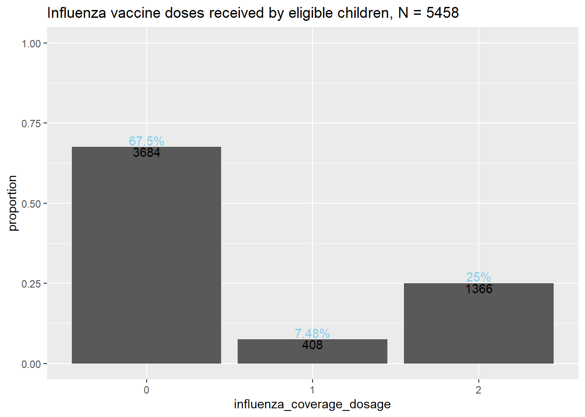
A majority of the children (68%) who are eligible for the influenza vax have not receieved the vaccine at all (i.e. 0 doses or Not vaxxed). However, within the children who have receieved at least one dose of the vaccine (~32%), a much greater proportion of them are considered fully vaxxed than being partially vaxxed (a ratio of 10:1).
This is supported by data on the number of doses received, the ratio of individuals who have received 2 doses as compared to 1 dose is roughly 3:1 (25:7.5). The discrepnacy in ratios can be explained by children below the age of 5 being considered fully vaxxed individuals upon receiving 1 or more doses of the influenza vax
Covid data
Distribution of coverage by number of doses and the degree of coverage (since october 2022)
By degree of coverage
cov |>
filter(!is.na(covid_coverage_age)) |>
summarise(individuals = n(), .by = covid_coverage_age) |>
mutate(proportion = individuals / sum(individuals)) |>
arrange(covid_coverage_age) |>
mutate(
covid_coverage_age = factor(
case_when(
covid_coverage_age == 0 ~ "Not vaxxed",
covid_coverage_age == 1 ~ "Partially vaxxed",
covid_coverage_age == 2 ~ "Fully vaxxed"
),
levels = c("Not vaxxed", "Partially vaxxed", "Fully vaxxed")
)
) |>
ggplot(aes(x = covid_coverage_age, y = proportion)) +
geom_col() +
ylim(0, 1) +
geom_text(aes(label = individuals), vjust = 1.0) +
ggtitle(
paste(
"Covid vaccination status of eligible children, N =",
sum(!is.na(cov$covid_coverage_age))
)
) +
geom_text(aes(label = paste(signif(proportion*100, 3), "%", sep = "")), vjust = -0.2 , colour = "skyblue") 
By number of doses
cov |>
filter(!is.na(covid_coverage_dosage)) |>
summarise(individuals = n(), .by = covid_coverage_dosage) |>
mutate(proportion = individuals / sum(individuals)) |>
arrange(covid_coverage_dosage) |>
ggplot(aes(x = covid_coverage_dosage, y = proportion)) +
geom_col() +
ylim(0, 1) +
geom_text(aes(label = individuals), vjust = 1.0) +
ggtitle(
paste(
"Doses of the covid vaccine received by eligible children, N =",
sum(!is.na(cov$covid_coverage_dosage))
)
) +
geom_text(aes(label = paste(signif(proportion*100, 3), "%", sep = "")), vjust = -0.2 , colour = "skyblue")
Majority of individuals who exist in
The data on covid vaccinations tells a similar story to that of influenza vaccinations. Namely, the proportion of eligible children who are not vaxxed at all remains high at 80% of the children body. However, the proportion of individuals who are partially vaccinated – less than 3 doses for individuals over the age of 5 – is significantly higher (partial:full = 1:3) than that for those who received the influenza vaccine (partial:full = 1:10).
Referencing the number of doses of the covid vaccine received by individuals, we note that 13.6% of the eligible children received 3 doses of the covid vaccine, 1.3% lower than the 14.9% of children who are fully vaxxed – this is explained by children under 5y/o being classified as fully vaccinated as long as they have 1 or more doses of the covid vaccine due to variances in the vaccination schedule of covid vacccines for that age group. Note that majority (85%) of the 5.6% children who are partially vaccinated received 2 doses, 4.8% of all eligible children.
Why are there more children who are partially vaccinated for covid as opposed to the influenza vaccination?
Multivariate analysis
Independent variables
Package used: GGally for pairs plots?
Bivariate analysis
Independent variables
Questions to be asked
Number of individuals
Total number of individuals
The following is a breakdown of the number of households according to number of individuals per household
ivd |>
# group number of households and number of households with children of
# interest by individuals per household
summarise(
households = n(),
households_w_COI = sum(child_of_interest),
percentage_w_COI = signif((households_w_COI / households) * 100, 2),
.by = household_total
) |>
# arrange in ascending order of individuals per household
arrange(.by = household_total) |>
rename(individuals = household_total) -> households_by_indivs
# display a transposed table
households_by_indivs |>
t() |>
as.data.frame() |>
kable(col.names = NULL) | individuals | 1 | 2 | 3 | 4 | 5 | 6 | 7 | 8 | 9 | 10 | 11 | 12 | 15 | 21 | 25 |
| households | 7995 | 10901 | 7149 | 5003 | 1429 | 381 | 97 | 31 | 5 | 3 | 1 | 1 | 1 | 1 | 2 |
| households_w_COI | 0 | 109 | 2244 | 2378 | 673 | 174 | 39 | 11 | 4 | 1 | 1 | 0 | 0 | 0 | 2 |
| percentage_w_COI | 0 | 1 | 31 | 48 | 47 | 46 | 40 | 35 | 80 | 33 | 100 | 0 | 0 | 0 | 100 |
# bar and line plot
family_overview <-
households_by_indivs |>
melt(id = 'individuals') |>
rename(households = value) -> melted_households_by_indivs
ggplot() +
geom_col(
mapping = aes(x = individuals, y = households, fill = variable),
data = melted_households_by_indivs[1:30, ],
position = "dodge"
) +
#geom_text(
#mapping = aes(x = individuals, y = households, label = households),
#data = melted_households_by_indivs[1:30, ],
#vjust = -0.5, size = 2.0
#) +
geom_text(
aes(x = individuals, y = households, label = paste(households, "%", sep = "" )),
melted_households_by_indivs[30:45, ],
vjust = 1.0, size = 4.0, colour = "skyblue"
) + xlim(2,7)
Where the bars represent the number of household for each household size and the line graph represents the number of households with a child of interest for each household size
Responses from households of 3 to 5 people posses the majority of children of interest. Households comprise of 2 individuals had very little responses with a child of interest which could be attributed to there being less single-child parents.
To examine how the number of individuals in a household affects the children of interest then, we should primarily be looking at households of at least 2 individuals (children of interest = 109), and up to 7 people (children of interest = 39).
Does the number of individuals in a household affect
Breakdown of the number of households by household size – for those with covid vaccination data
cov_ivd |>
filter(household_total > 1 & !is.na(covid_coverage_age)) |>
group_by(household_total) |>
summarise(count = n()) |>
kable(format = "html")| household_total | count |
|---|---|
| 2 | 109 |
| 3 | 2078 |
| 4 | 2370 |
| 5 | 672 |
| 6 | 173 |
| 7 | 38 |
| 8 | 11 |
| 9 | 3 |
| 10 | 1 |
| 11 | 1 |
| 25 | 2 |
1. The child’s covid vaccination status
# determine the proportion of individuals who are not, partially and fully vaccinated
# for households of each size
covage_by_total <- cov_ivd |>
filter(household_total > 1 & !is.na(covid_coverage_age)) |>
group_by(household_total, covid_coverage_age) |>
summarise(count = n()) |>
ggplot() +
geom_col(
aes(x = household_total, y = count, fill = covid_coverage_age),
position = "fill"
) +
ylab("Proportion")
scale_fill_hue(labels = c("not vaxxed", "partially vaxxed", "fully vaxxed"))<ggproto object: Class ScaleDiscrete, Scale, gg>
aesthetics: fill
axis_order: function
break_info: function
break_positions: function
breaks: waiver
call: call
clone: function
dimension: function
drop: TRUE
expand: waiver
get_breaks: function
get_breaks_minor: function
get_labels: function
get_limits: function
get_transformation: function
guide: legend
is_discrete: function
is_empty: function
labels: not vaxxed partially vaxxed fully vaxxed
limits: NULL
make_sec_title: function
make_title: function
map: function
map_df: function
n.breaks.cache: NULL
na.translate: TRUE
na.value: grey50
name: waiver
palette: function
palette.cache: NULL
position: left
range: environment
rescale: function
reset: function
train: function
train_df: function
transform: function
transform_df: function
super: <ggproto object: Class ScaleDiscrete, Scale, gg># print full graph
covage_by_total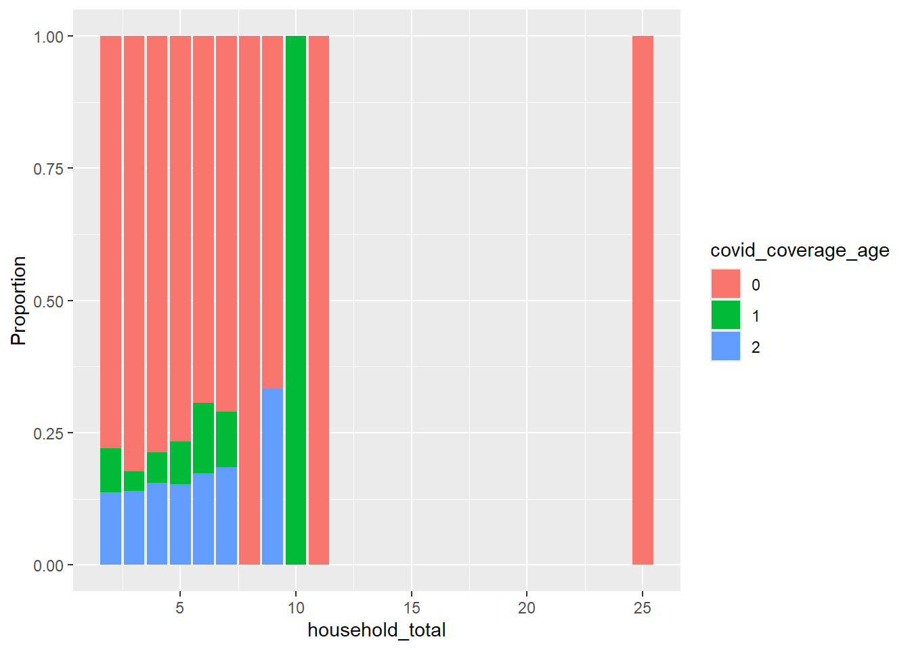
# limit the same plot to households of 2 to 7 individuals
covage_by_total + xlim(1,8)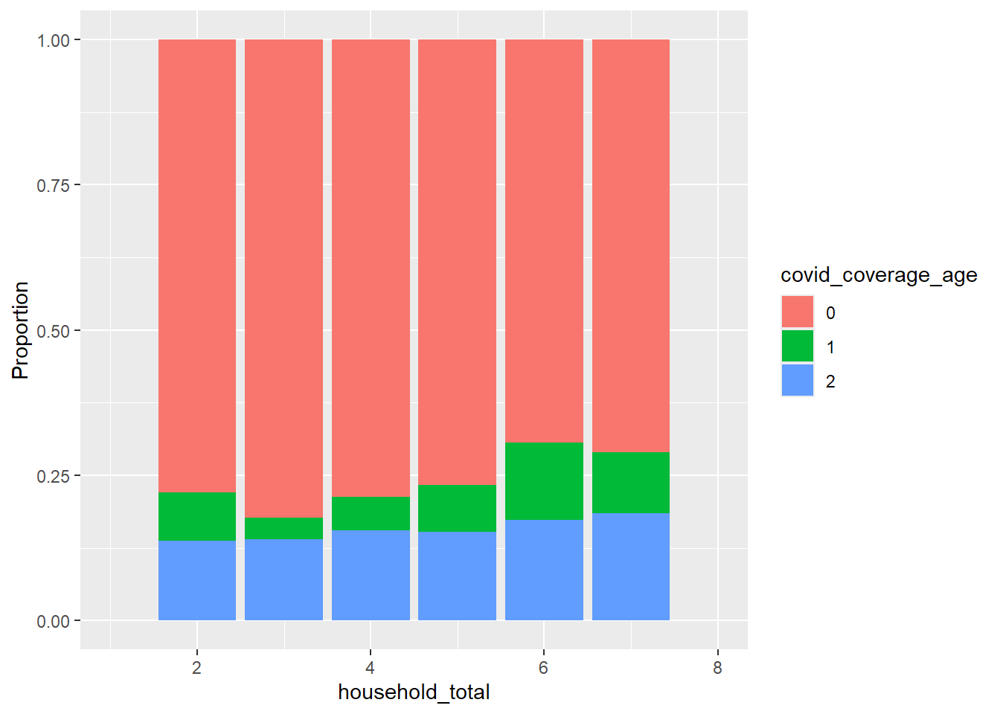
For household sizes of 2 to 7 individuals, we see a positive linear relationship between household size and being fully vaccinated. The apparent continuation of this trend with households of size 9 is deceptive as it is due to the small sample size of households of 9 individuals (n = 3)
2. The number of doses of the covid vaccine the child receives
*Following data on the degree of covid coverage by total household size, we limit the range of household sizes to household sizes of sufficiently large (n >= 30) counts.
# determine the proportion of individuals who receive 0 to 3 doses
# for households of each size
cov_ivd |>
# stratify by household size and doses received
filter(household_total > 1 & !is.na(covid_coverage_dosage)) |>
# factorise dosage
mutate(
covid_coverage_dosage = factor(covid_coverage_dosage)
) |>
group_by(household_total, covid_coverage_dosage) |>
# count the number of children in each category
summarise(count = n()) |>
ggplot() +
geom_col(
aes(x = household_total, y = count, fill = covid_coverage_dosage),
position = "fill"
) +
xlim(1,8)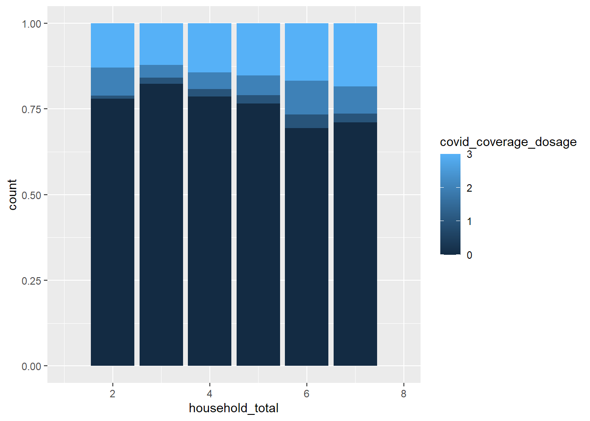
Using simple linear regression to test the effect of an increasing number of household members on the proportions of individuals receiving 0 to 3 doses of the covid vaccine respectively.
cov_ivd |>
mutate(covid_coverage_dosage = factor(covid_coverage_dosage)) |>
# stratify by household size and doses received
filter(household_total > 1 & !is.na(covid_coverage_dosage)) |>
group_by(household_total, covid_coverage_dosage) |>
# count the number of children in each category
summarise(count = n()) |>
reframe(doses = covid_coverage_dosage, proportion = count/sum(count)) |>
ggplot(aes(x = household_total, y = proportion, colour = doses)) +
xlim(2,7) +
geom_point() +
geom_smooth(method = "lm")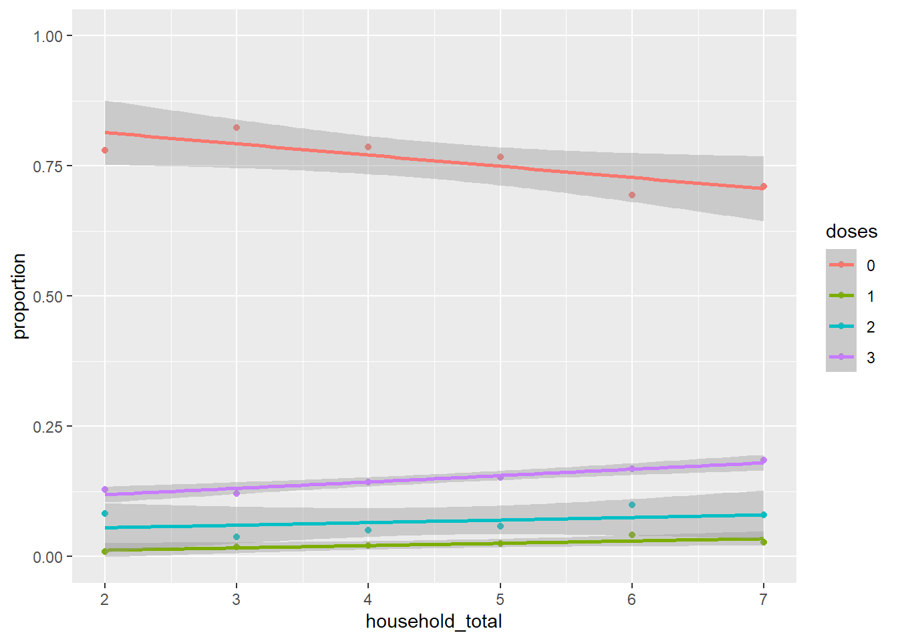
There is a positive linear relationship between total household size and the number of individuals receiving 1 & 3 doses of the covid vaccine.
This is accounted for by the negative linear relationship between total household size and the number of individuals receiving 0 doses of the covid vaccine – indicating that more invidiuals who were previously unvaccinated were getting vaccinated.
However, there was no significant relationship between total household size and the proportion of individuals who received 2 doses of the covid vaccine.
3.the child’s (influenza) vaccination status Breakdown of the number of households by household size – for those with influenza vaccination data
inf_ivd |>
filter(household_total > 1 & !is.na(influenza_coverage_age)) |>
group_by(household_total) |>
summarise(count = n())# A tibble: 11 × 2
household_total count
<int> <int>
1 2 109
2 3 2078
3 4 2370
4 5 672
5 6 173
6 7 38
7 8 11
8 9 3
9 10 1
10 11 1
11 25 2# determine the proportion of individuals who are not, partially and fully vaccinated
# for households of each size
infage_by_total <- inf_ivd |>
filter(household_total > 1 & !is.na(influenza_coverage_age)) |>
group_by(household_total, influenza_coverage_age) |>
summarise(count = n()) |>
ggplot() +
geom_col(
aes(x = household_total, y = count, fill = influenza_coverage_age),
position = "fill"
) +
scale_fill_hue(labels = c("not vaxxed", "partially vaxxed", "fully vaxxed"))
# print full graph
infage_by_total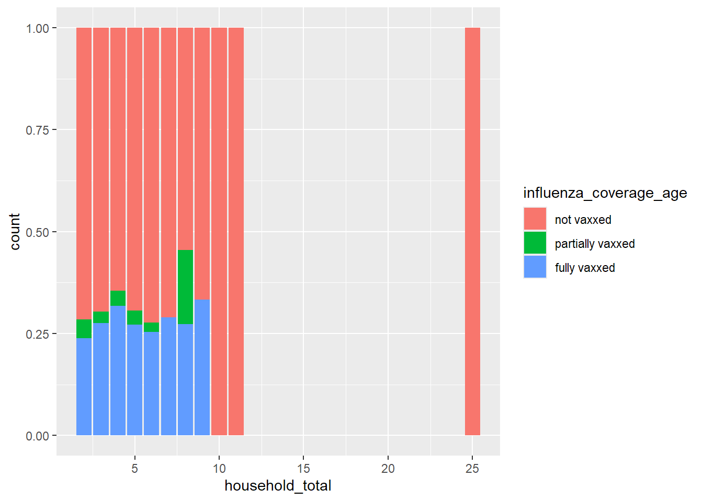
# limit the same plot to households of 2 to 7 individuals
infage_by_total + xlim(1,8)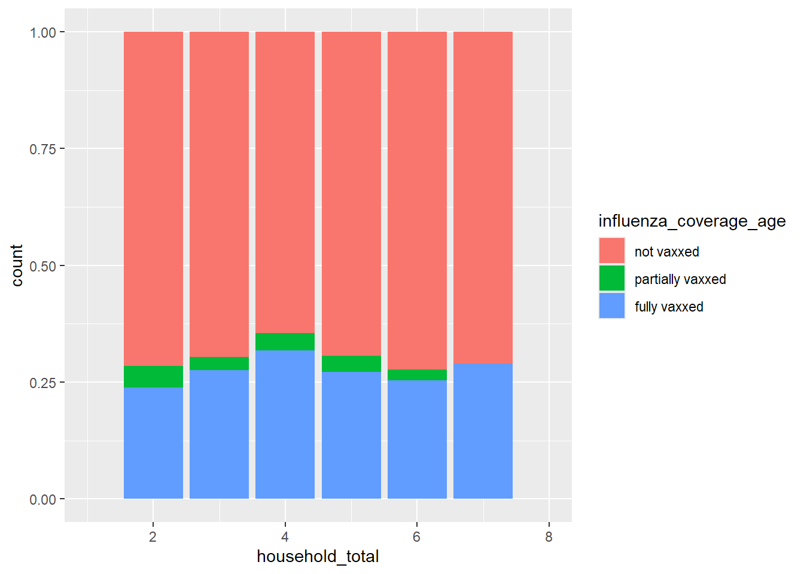
We limit the range of observations to households of sizes from 2 to 7 people such that the sample for each household size is sufficiently large (n >= 30).
Whilst it may appear that the proportion of individuals who get fully vaccinated increases with an increasing household size, this does not hold true once we limit the range of observations to households of sizes from 2 to 7 people such that the sample for each household size is sufficiently large (n >= 30).
The proportion of children of interest becoming fully vaccinated with the influenza vaccine fluctuates with the total number of individuals in a household. This deviates from the trend, where the proportion of individuals becoming fully vaccinated increased as the total number of individuals in a household increased, shown with the covid vaccine.
- the number of doses of the influenza vaccine the child receives*Following data on the degree of influenza coverage by total household size, we limit the range of household sizes to household sizes of sufficiently large (n >= 30) counts.
# determine the proportion of individuals who receive 0 to 3 doses
# for households of each size
inf_ivd |>
# stratify by household size and doses received
filter(household_total > 1 & !is.na(influenza_coverage_dosage)) |>
mutate(influenza_coverage_dosage = factor(influenza_coverage_dosage)) |>
group_by(household_total, influenza_coverage_dosage) |>
# count the number of children in each category
summarise(count = n()) |>
ggplot() +
geom_col(
aes(x = household_total, y = count, fill = influenza_coverage_dosage),
position = "fill"
) + xlim(1,8)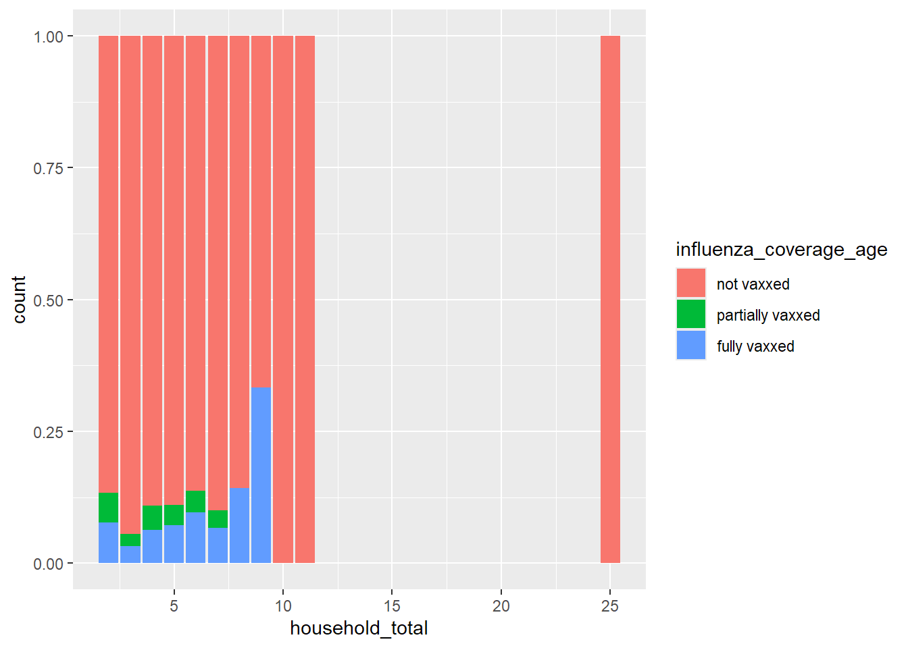
Using simple linear regression to test the effect of an increasing number of household members on the proportions of individuals receiving 0 to 3 doses of the covid vaccine respectively.
inf_ivd |>
mutate(influenza_coverage_dosage = factor(influenza_coverage_dosage)) |>
# stratify by household size and doses received
filter(household_total > 1 & !is.na(influenza_coverage_dosage)) |>
mutate(influenza_coverage_dosage = factor(influenza_coverage_dosage)) |>
group_by(household_total, influenza_coverage_dosage) |>
# count the number of children in each category
summarise(count = n()) |>
reframe(doses = influenza_coverage_dosage, proportion = count/sum(count)) |>
ggplot(aes(x = household_total, y = proportion, colour = doses)) +
xlim(2,7) +
geom_point() +
geom_smooth(method = "lm")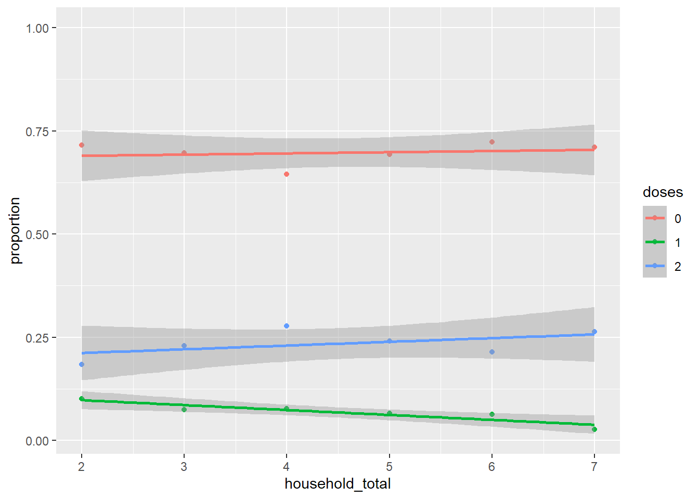
The total number of individuals in a household is not indicative of the proportion of individuals who receive 0 doses of the influenza vaccine.
The proportion of individuals receiving 1 vaccine decreased with an increasing number of individuals in a household whilst The proportion of individuals receiving 2 doses of the influenza vacine increased with an increasing number of individuals in the household.
Number of aunts and uncles
Does the number of aunts and uncles a child has affect: The following is a breakdown of the number of households with respect to the number of aunts and uncles that the child of interest has – for those with a valid covid vaccination status
cov_ivd |>
filter(!is.na(covid_coverage_age)) |>
summarise(count = n(), .by = child_auntcles) |>
arrange(child_auntcles) child_auntcles count
1 0 5423
2 1 26
3 2 7
4 3 21. The child’s (covid) vaccination status
# determine the proportion of individuals who are not, partially and fully vaccinated
# for households of each size
cov_ivd |>
filter(!is.na(covid_coverage_age)) |>
mutate(
auntcles = case_when(
child_auntcles == 0 ~ "No",
child_auntcles > 0 ~ "Yes"
)
) |>
group_by(auntcles, covid_coverage_age) |>
summarise(count = n()) |>
ggplot() +
geom_col(
aes(x = auntcles, y = count, fill = covid_coverage_age),
position = "fill"
) +
scale_fill_hue(labels = c("not vaxxed", "partially vaxxed", "fully vaxxed"))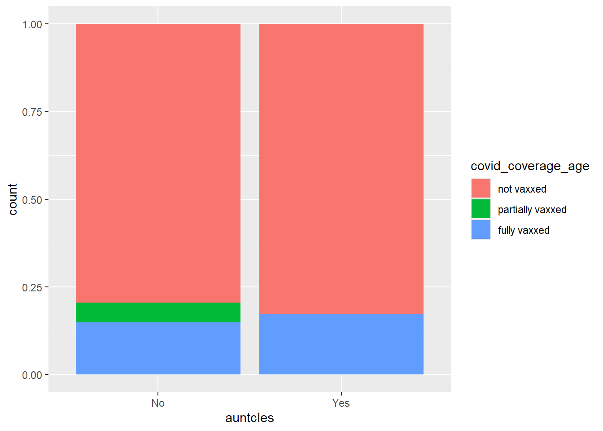
Due to the small sample of households where there are both children of interest with valid covid vaccination data and aunts or uncles living with them, let us recatogrise such data to determine if having an aunt or uncle living with a child impacts their chances of receiving the covid vaccine at all
cov_ivd |>
filter(!is.na(covid_coverage_age)) |>
mutate(
# recode for the presence/lack of aunts and uncles
auntcles = case_when(
child_auntcles == 0 ~ "No",
child_auntcles > 0 ~ "Yes"
),
# recode for the presence/lack of any degree of covid coverage
covid_coverage = case_when(
covid_coverage_age == 0 ~ "No",
covid_coverage_age != 0 ~ "Yes"
)
) |>
group_by(auntcles, covid_coverage) |>
summarise(count = n()) -> auntcles_cov
# test if uptake of the covid vaccine in children of interest is dependent on
# the presence of aunts and uncles in a houseold
auntcles_cov |>
# re-frame the data as a contingency table
(function(x) xtabs(count ~ auntcles + covid_coverage, data = x))() |>
# carry out a chi-sqaured test
chisq.test()
Pearson's Chi-squared test with Yates' continuity correction
data: (function(x) xtabs(count ~ auntcles + covid_coverage, data = x))(auntcles_cov)
X-squared = 0.082036, df = 1, p-value = 0.7746Since the p-value (0.8667) is not less than 0.05, we fail to reject the null hypothesis. Thus Covid vaccination uptake of a child is independent of the presence of aunts and uncles in the household.
2. The number of doses of the covid vaccine the child receives Refer to data on the degree of coverage for the covid vaccine with respect to the presence of aunts and uncles
3. The child’s (influenza) vaccination status The following is a breakdown of the number of households with respect to the number of aunts and uncles the child of interest has – for those with a valid influenza vaccination status
inf_ivd |>
filter(!is.na(influenza_coverage_age)) |>
summarise(count = n(), .by = child_auntcles) |>
arrange(child_auntcles) child_auntcles count
1 0 5423
2 1 26
3 2 7
4 3 2# determine the proportion of individuals who are not, partially and fully vaccinated
# for households of each size
inf_ivd |>
filter(!is.na(influenza_coverage_age)) |>
mutate(
auntcles = case_when(
child_auntcles == 0 ~ "No",
child_auntcles > 0 ~ "Yes"
)
) |>
group_by(auntcles, influenza_coverage_age) |>
summarise(count = n()) |>
ggplot() +
geom_col(
aes(x = auntcles, y = count, fill = influenza_coverage_age),
position = "fill"
) +
scale_fill_hue(labels = c("not vaxxed", "partially vaxxed", "fully vaxxed"))
For all cases where children had aunts/uncles living with them, the children of interest were not vaccinated with the influenza vaccine.
To carry out a chi-squared test:
inf_ivd |>
filter(!is.na(influenza_coverage_age)) |>
mutate(
# recode variables for the presence/lack of any uncles
auntcles = case_when(
child_auntcles == 0 ~ "No",
child_auntcles > 0 ~ "Yes"
),
# recode variables for the presence or lack of influenza coverage
influenza_coverage = case_when(
influenza_coverage_age == 0 ~ "No",
influenza_coverage_age != 0 ~ "Yes" # any degree of coverage
)
) |>
# stratify by degree of coverage and the presence of uncles to get a 2x2
# contingeny table
group_by(auntcles, influenza_coverage) |>
summarise(count = n()) -> auntcles_inf
# determine if there's a relation between influenza vax uptake and the presence
# of aunts and uncles
auntcles_inf |>
# re-frame the data in a contingency table
(function(x) xtabs(count ~ influenza_coverage + auntcles, data = x))() |>
# chi-squared test
chisq.test()
Pearson's Chi-squared test with Yates' continuity correction
data: (function(x) xtabs(count ~ influenza_coverage + auntcles, data = x))(auntcles_inf)
X-squared = 0.10058, df = 1, p-value = 0.7511As the p-value (p = 0.2164) > 0.05, we cannot reject the null. Thus, we cannot conclude that the uptake of the influenza vaccine in children of interest is dependent on the presence of aunts and/or uncles in a household.
4. The number of doses of the influenza vaccine the child receives Refer to data on the degree of coverage for the influenza vaccine with respect to the presence of aunts and uncles.
Number of vulnerable individuals
Does the number of vulnerable individuals living in the same household (this includes individuals who are bedriden, need ventilation and need feeding) affect:
The uptake of the covid vaccine?
cov_ivd |>
filter(!is.na(covid_coverage_dosage)) |>
group_by(vulnerable_individuals) |>
summarise(count = n())# A tibble: 4 × 2
vulnerable_individuals count
<int> <int>
1 0 5421
2 1 25
3 2 3
4 3 9plotting the uptake of the covid vaccine by dosage against the number of vulnerable individuals in a household:
# determine the proportion of individuals who receive 0 to 3 doses
# for households with varying numbers of vulnerable individuals
cov_ivd |>
# stratify by number of vulnerable individuals and doses received
filter(!is.na(covid_coverage_dosage)) |>
mutate(covid_coverage_dosage = factor(covid_coverage_dosage)) |>
group_by(vulnerable_individuals, covid_coverage_dosage) |>
# count the number of children in each category
summarise(count = n()) |>
ggplot() +
geom_col(
aes(x = vulnerable_individuals, y = count, fill = covid_coverage_dosage),
position = "fill"
) +
geom_text(
aes(x = vulnerable_individuals, y = count, label = count, group = covid_coverage_dosage),
position = position_fill(vjust = 0.5),
size = 3
) +
ylab("proportion")
Given the small number of households who have 1 or more vulnerable individuals living with them, let’s reframe this variable to investigate the effect of the presence of vulnerable individuals on the number of doses of the covid vaccine the individuals receives.
cov_ivd |>
# filter out eligible individuals
filter(!is.na(covid_coverage_dosage) & !is.na(vulnerable_individuals)) |>
mutate(
# recode according to the presence/lack of any doses of the covid vaccine
covid_coverage = case_when(
covid_coverage_dosage == 0 ~ "No",
covid_coverage_dosage != 0 ~ "Yes"
) |>
factor(),
# recode according to the presence/lack of any vulnerable individuals
vulnerables = case_when(
vulnerable_individuals == 0 ~ "No",
vulnerable_individuals != 0 ~ "Yes"
) |>
factor()
) |>
# stratify to create 4 categories
summarise(count = n(), .by = c(vulnerables, covid_coverage)) -> vulnerable_cov
# compare the proportion of individuals who have/haven't received doses of the
# covid vaccine for households with and without vulnerable individuals
vulnerable_cov |>
mutate(proportion = count/sum(count), .by = vulnerables) |>
ggplot() +
geom_col(
aes(
x = vulnerables, y = proportion, fill = covid_coverage
),
position = "fill"
)
# perform a chi-sqaured test to determine if there is a correlation between
# the presence of vulnerable individuals and the number of doses of the covid
# vaccine received
vulnerable_cov |>
# convert the table to a contingency table
(function(x) xtabs(count ~ vulnerables + covid_coverage, data = x))() |>
chisq.test()
Pearson's Chi-squared test with Yates' continuity correction
data: (function(x) xtabs(count ~ vulnerables + covid_coverage, data = x))(vulnerable_cov)
X-squared = 2.5474, df = 1, p-value = 0.1105Having vulnerable individuals in a household increases the proportion of children of interest who receive some form of covid vaccine coverage (32.4%) as compared to children of interest who have no vulnerable individuals in their household (20.4%). However, performing a Pearson’s Chi-sqaured test, we obtain a p-value < 0.05 (p = 0.1105). Thus, we have insufficient evidence to reject the null and cannot conclude that a child’s covid vaccine coverage is dependent on the presence of vulnerables in their household.
The uptake of the influenza vaccine The following is a breakdown of households by the number of vulnerable individuals – for those with children of interest that have valid influenza vaccination data
inf_ivd |>
filter(!is.na(influenza_coverage_dosage) & !is.na(vulnerable_individuals)) |>
summarise(count = n(), .by = vulnerable_individuals) |>
arrange(vulnerable_individuals) vulnerable_individuals count
1 0 5421
2 1 25
3 2 3
4 3 9plotting the uptake of the influenza vaccine by dosage against the number of vulnerable individuals in a household:
# determine the proportion of individuals who receive 0 to 2 doses
# for households with varying numbers of vulnerable individuals
inf_ivd |>
# stratify by number of vulnerable individuals and doses received
filter(!is.na(influenza_coverage_dosage)) |>
mutate(influenza_coverage_dosage = factor(influenza_coverage_dosage)) |>
group_by(vulnerable_individuals, influenza_coverage_dosage) |>
# count the number of children in each category
summarise(count = n()) |>
ggplot() +
geom_col(
aes(x = vulnerable_individuals, y = count, fill = influenza_coverage_dosage),
position = "fill"
) +
geom_text(
aes(x = vulnerable_individuals, y = count, label = count, group = influenza_coverage_dosage),
position = position_fill(vjust = 0.5),
size = 3
) +
ylab("proportion")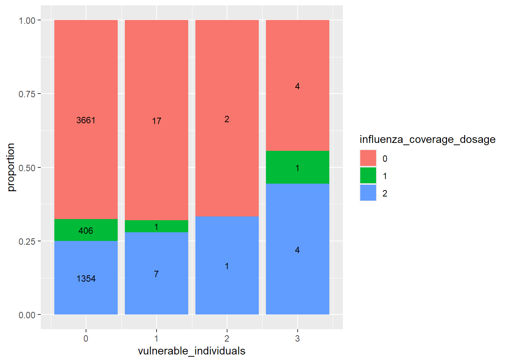
An increase in the number of vulnerable individuals in a household seems to be indicative of an increase in the proportion of children of interest who receive 2 doses oef the influenza vaccine. However,the sample size is not statistically significant. (n = 3 for households with 2 vulnerable individuals; and n = 9 for households with 3 vulnerable individuals).
As there are an insignificant number of households with more than 1 vulnerable individual (n = 37), we will re-group our categories to investigate the impact of the presence of vulnerable individuals on influenza vaccine uptake.
inf_ivd |>
# filter out eligible individuals
filter(!is.na(influenza_coverage_dosage) & !is.na(vulnerable_individuals)) |>
mutate(
# recode according to the presence/lack of any doses of the influenza vaccine
influenza_coverage = case_when(
influenza_coverage_dosage == 0 ~ "No",
influenza_coverage_dosage != 0 ~ "Yes"
) |>
factor(),
# recode according to the presence/lack of any vulnerable individuals
vulnerables = case_when(
vulnerable_individuals == 0 ~ "No",
vulnerable_individuals != 0 ~ "Yes"
) |>
factor()
) |>
# stratify to create 4 categories
summarise(count = n(), .by = c(vulnerables, influenza_coverage)) ->
vulnerable_inf
# compare the proportion of individuals who have/haven't received doses of the
# influenza vaccine for households with and without vulnerable individuals
vulnerable_inf |>
mutate(proportion = count/sum(count), .by = vulnerables) |>
ggplot() +
geom_col(
aes(
x = vulnerables, y = proportion, fill = influenza_coverage
),
position = "fill"
)
# perform a chi-sqaured test to determine if there is a correlation between
# the presence of vulnerable individuals and the number of doses of the influenza
# vaccine received
vulnerable_inf |>
# convert the table to a contingency table
(function(x) xtabs(count ~ vulnerables + influenza_coverage, data = x))() |>
chisq.test()
Pearson's Chi-squared test with Yates' continuity correction
data: (function(x) xtabs(count ~ vulnerables + influenza_coverage, data = x))(vulnerable_inf)
X-squared = 0.26948, df = 1, p-value = 0.6037Performing a chi-squared test, as the p-value > 0.05 (p = 0.6037). Thus, we have insufficient evidence to reject the null and cannot conclude that the proportion of children of interest receiving a dose of the influenza vaccine is not independent of the presence of vulnerable individuals in their household.
Number of grandparents
Does the number of grandparents living in the same household affect: 1. The number of doses of the covid vaccine the child receives The following is a breakdown of the households by the number of grandparents per household
cov_ivd |>
filter(!is.na(covid_coverage_dosage) & !is.na(child_grand)) |>
summarise(count = n(), .by = child_grand) |>
arrange(child_grand) child_grand count
1 0 5116
2 1 147
3 2 174
4 3 11
5 4 10let us plot the proportion of children of interest with different covid vaccination statuses for households 0 to 4 grandparents.
cov_ivd |>
filter(!is.na(covid_coverage_age) & !is.na(child_grand)) |>
summarise(count = n(), .by = c(covid_coverage_age, child_grand)) |>
mutate(proportion = count/sum(count), .by = child_grand) -> grand_cov_age
# plot how the number of grandparents in a household affects the covid coverage
# by age
grand_cov_age |>
# create proportion bar plots to reflect the proportion of children who are
# fully, partially and not covered by the covid vaccine
ggplot() +
geom_col(aes(x = child_grand, y = proportion, fill = covid_coverage_age), position = "fill") +
geom_text(
aes(x = child_grand, y = count, label = count, group = covid_coverage_age), # Ensure text aligns with each segment
position = position_fill(vjust = 0.5), # Centers text inside each stacked section
size = 2.5
)
An increase in the number of grandparents in a household does not have a significant impact on the proportion of children of interest who receive full coverage with the covid vaccine.
Running linear regressions to determine how the proportions for each degree of covid coverage vary with the number of grandparents in a household, we obtain the following models.
# create variable to hold linear models
lms_grand_cov_age <- NA
# calculate coefficients for linear models
for(i in 0:2) {
grand_cov_age[grand_cov_age$covid_coverage_age == i, ] |>
(function(x) lm(proportion ~ child_grand, data = x))() -> y
lms_grand_cov_age[i+1] <- y
}
# plot linear models
grand_cov_age |>
ggplot(aes(x = child_grand, y = proportion, colour = covid_coverage_age)) +
geom_point() +
geom_smooth(method = "lm")
## names(lms_grand_cov_age) <- c("no coverage", "partial coverage", "full coverage")
lms_grand_cov_age[[1]]
(Intercept) child_grand
0.77864434 0.01553175
[[2]]
(Intercept) child_grand
0.04202702 0.01457172
[[3]]
(Intercept) child_grand
0.159265861 0.008408425 Now, examining how the presence of grandparents (0 vs more than 0) affects the uptake of the covid vaccine
cov_ivd |>
filter(!is.na(covid_coverage_age) & !is.na(child_grand)) |>
mutate(
presence_of_grandparents = case_when(
child_grand == 0 ~ "No",
child_grand > 0 ~ "Yes"
)
) |>
summarise(count = n(), .by = c(covid_coverage_age, presence_of_grandparents)) |>
mutate(proportion = count/sum(count), .by = presence_of_grandparents) -> grand_presence_covid_age
grand_presence_covid_age |>
ggplot() +
geom_col(aes(x = presence_of_grandparents, y = proportion, fill = covid_coverage_age), position = "fill")
There is no appreciable difference in the proportion of children (of interest) getting vaccinated with the covid vaccine in households where there is and isnt a grandparent present
Does the number of grandparents living in the same household affect: 2. The number of doses of the influenza vaccine the child receives
inf_ivd |>
filter(!is.na(influenza_coverage_age) & !is.na(child_grand)) |>
summarise(count = n(), .by = c(influenza_coverage_age, child_grand)) -> grand_inf_age
# plot how the number of grandparents in a household affects the influenza coverage
# by age
grand_inf_age |>
mutate(proportion = count/sum(count), .by = child_grand) |>
# create proportion bar plots to reflect the proportion of children who are
# fully, partially and not covered by the covid vaccine
ggplot() +
geom_col(aes(x = child_grand, y = proportion, fill = influenza_coverage_age), position = "fill") +
geom_text(
aes(x = child_grand, y = count, label = count, group = influenza_coverage_age), # Ensure text aligns with each segment
position = position_fill(vjust = 0.5), # Centers text inside each stacked section
size = 2.5
)
# plot a table showing the numbers corresponding to the graph above
grand_inf_age |>
arrange(child_grand, influenza_coverage_age) influenza_coverage_age child_grand count
1 0 0 3446
2 1 0 169
3 2 0 1501
4 0 1 105
5 1 1 2
6 2 1 40
7 0 2 121
8 1 2 8
9 2 2 45
10 0 3 6
11 1 3 1
12 2 3 4
13 0 4 6
14 2 4 4Does the presence of grandparents affect the uptake of the influenza vaccine in children of interest?
inf_ivd |>
filter(!is.na(influenza_coverage_age) & !is.na(child_grand)) |>
mutate(
presence_of_grandparents = case_when(
child_grand == 0 ~ "No",
child_grand > 0 ~ "Yes"
)
) |>
summarise(count = n(), .by = c(influenza_coverage_age, presence_of_grandparents)) |>
mutate(proportion = count/sum(count), .by = presence_of_grandparents) -> grand_presence_influenza_age
grand_presence_influenza_age |>
ggplot() +
geom_col(aes(x = presence_of_grandparents, y = proportion, fill = influenza_coverage_age), position = "fill")
Child and siblings
Total number of siblings
The following is a breakdown of the number of households by number of: 1) number of siblings
ivd |>
filter(!is.na(child_siblings)) |>
summarise(count = n(), .by = child_siblings) |>
arrange(child_siblings) child_siblings count
1 0 2442
2 1 2467
3 2 621
4 3 91
5 4 15- number of brothers
ivd |>
filter(!is.na(child_siblings)) |>
summarise(count = n(), .by = child_brothers) |>
arrange(child_brothers) child_brothers count
1 0 3778
2 1 1624
3 2 215
4 3 18
5 4 1- number of sisters
ivd |>
filter(!is.na(child_siblings)) |>
summarise(count = n(), .by = child_sisters) |>
arrange(child_sisters) child_sisters count
1 0 3925
2 1 1507
3 2 190
4 3 13
5 4 1Does the number of siblings living with the child in the same household affect:
1.The uptake of the covid vaccine in children of interest
cov_ivd |>
filter(!is.na(covid_coverage_age) & !is.na(child_siblings)) |>
summarise(count = n(), .by = c(covid_coverage_age, child_siblings)) |>
mutate(
covid_coverage_age = factor(
case_when(
covid_coverage_age == 0 ~ "Not vaxxed",
covid_coverage_age == 1 ~ "Partially vaxxed",
covid_coverage_age == 2 ~ "Fully vaxxed"
),
levels = c("Not vaxxed", "Partially vaxxed", "Fully vaxxed")
)
) ->
siblings_cov_age
siblings_cov_age |>
ggplot() +
geom_col(
aes(x = child_siblings, y = count, fill = covid_coverage_age), position = "fill"
) +
geom_text(
aes(x = child_siblings, y = count, label = count, group = covid_coverage_age), # Ensure text aligns with each segment
position = position_fill(vjust = 0.5), # Centers text inside each stacked section
size = 2.5
)
Now, examining if the presence of siblings instead of the number of siblings affects the uptake of the covid vaccine in children of interest
siblings_cov_age |>
mutate(
presence_of_siblings = case_when(
child_siblings == 0 ~ 0,
child_siblings > 0 ~ 1
)
) |>
ggplot() +
geom_col(
aes(x = presence_of_siblings, y = count, fill = covid_coverage_age), position = "fill"
)
2. The uptake of the Influenza vaccine in children of interest
inf_ivd |>
filter(!is.na(influenza_coverage_age) & !is.na(child_siblings)) |>
summarise(count = n(), .by = c(influenza_coverage_age, child_siblings)) |>
mutate(
influenza_coverage_age = factor(
case_when(
influenza_coverage_age == 0 ~ "Not vaxxed",
influenza_coverage_age == 1 ~ "Partially vaxxed",
influenza_coverage_age == 2 ~ "Fully vaxxed"
),
levels = c("Not vaxxed", "Partially vaxxed", "Fully vaxxed")
)
) -> siblings_inf_age
siblings_inf_age |>
ggplot() +
geom_col(
aes(x = child_siblings, y = count, fill = influenza_coverage_age), position = "fill"
) +
geom_text(
aes(x = child_siblings, y = count, label = count, group = influenza_coverage_age), # Ensure text aligns with each segment
position = position_fill(vjust = 0.5), # Centers text inside each stacked section
size = 2.5
)
Now, examining if the presence of siblings instead of the number of siblings affects the uptake of the influenza vaccine in children of interest
siblings_inf_age |>
mutate(
presence_of_siblings = case_when(
child_siblings == 0 ~ 0,
child_siblings > 0 ~ 1
)
) |>
ggplot() +
geom_col(
aes(x = presence_of_siblings, y = count, fill = influenza_coverage_age), position = "fill"
)
Number of brothers and/or sisters
Does the number of sisters and or brothers living in the same household as the child affect: 1. The uptake of the covid vaccine(by coverage) in children of interest
cov_ivd |>
filter(!is.na(covid_coverage_age) & !is.na(child_brothers)) |>
summarise(count = n(), .by = c(covid_coverage_age, child_brothers)) |>
mutate(proportion = count / sum(count), .by = child_brothers) -> cov_coverage_age_brothers
cov_ivd |>
filter(!is.na(covid_coverage_age) & !is.na(child_sisters)) |>
summarise(count = n(), .by = c(covid_coverage_age, child_sisters)) |>
mutate(proportion = count / sum(count), .by = child_sisters) -> cov_coverage_age_sisters
cov_ivd |>
filter(!is.na(covid_coverage_age) & child_brothers <= 3 & child_sisters <= 3) |>
summarise(count = n(), .by = c(covid_coverage_age, child_sisters, child_brothers)) |>
mutate(proportion = count / sum(count), .by = c(child_sisters, child_brothers)) -> cov_covereage_age_brothers_sisters
cov_coverage_age_brothers |>
ggplot() +
geom_col(aes(x = child_brothers, y = proportion, fill = covid_coverage_age), position = "fill") +
geom_text(aes(x = child_brothers, y = proportion, label = count, group = covid_coverage_age), position = position_fill(vjust = 0.5), size = 2.5) +
ggtitle("Uptake of the covid-19 vaccine by the number of \n brothers per household")
cov_coverage_age_sisters |>
ggplot() +
geom_col(aes(x = child_sisters, y = proportion, fill = covid_coverage_age), position = "fill") +
geom_text(aes(x = child_sisters, y = proportion, label = count, group = covid_coverage_age), position = position_fill(vjust = 0.5), size = 2.5) +
ggtitle("Uptake of the covid-19 vaccine by the number of \n sisters per household")
cov_covereage_age_brothers_sisters |>
mutate(sum_by_brothers = sum(count), .by = c(child_brothers, child_sisters)) |>
ggplot() +
geom_col(aes(x = interaction(child_brothers, child_sisters), y = proportion, fill = covid_coverage_age), position = "fill") +
geom_text(aes(x = interaction(child_brothers, child_sisters), y = 1, label = sum_by_brothers)) +
facet_wrap(vars(child_sisters)) +
ggtitle("Uptake of the covid-19 vaccine with increasing numbers of sisters, \n for families with 0-3 brothers respectively")
cov_covereage_age_brothers_sisters |>
mutate(sum_by_sisters = sum(count), .by = c(child_sisters, child_brothers)) |>
ggplot() +
geom_col(aes(x = interaction(child_sisters, child_brothers), y = proportion, fill = covid_coverage_age), position = "fill") +
geom_text(aes(x = interaction(child_sisters, child_brothers), y = 1, label = sum_by_sisters)) +
facet_wrap(vars(child_brothers)) +
ggtitle("Uptake of the covid-19 vaccine with increasing numbers of brothers, \n for families with 0-3 sisters respectively")
2. The uptake of the influenza vaccine in children of interest
inf_ivd |>
filter(!is.na(influenza_coverage_age) & !is.na(child_brothers)) |>
summarise(count = n(), .by = c(influenza_coverage_age, child_brothers)) |>
mutate(proportion = count / sum(count), .by = child_brothers) -> inf_coverage_age_brothers
inf_ivd |>
filter(!is.na(influenza_coverage_age) & !is.na(child_sisters)) |>
summarise(count = n(), .by = c(influenza_coverage_age, child_sisters)) |>
mutate(proportion = count / sum(count), .by = child_sisters) -> inf_coverage_age_sisters
inf_ivd |>
filter(!is.na(influenza_coverage_age) & child_brothers <= 3 & child_sisters <= 3) |>
summarise(count = n(), .by = c(influenza_coverage_age, child_sisters, child_brothers)) |>
mutate(proportion = count / sum(count), .by = c(child_sisters, child_brothers)) -> inf_coverage_age_brothers_sisters
inf_coverage_age_brothers |>
ggplot() +
geom_col(aes(x = child_brothers, y = proportion, fill = influenza_coverage_age), position = "fill") +
geom_text(aes(x = child_brothers, y = proportion, label = count, group = influenza_coverage_age), position = position_fill(vjust = 0.5), size = 2.5) +
ggtitle("Uptake of the influenza-19 vaccine by the number of brothers per household")
inf_coverage_age_sisters |>
ggplot() +
geom_col(aes(x = child_sisters, y = proportion, fill = influenza_coverage_age), position = "fill") +
geom_text(aes(x = child_sisters, y = proportion, label = count, group = influenza_coverage_age), position = position_fill(vjust = 0.5), size = 2.5) +
ggtitle("Uptake of the influenza-19 vaccine by the number of sisters per household")
inf_coverage_age_brothers_sisters |>
mutate(sum_by_brothers = sum(count), .by = c(child_brothers, child_sisters)) |>
ggplot() +
geom_col(aes(x = interaction(child_brothers, child_sisters), y = proportion, fill = influenza_coverage_age), position = "fill") +
geom_text(aes(x = interaction(child_brothers, child_sisters), y = 1, label = sum_by_brothers)) +
facet_wrap(vars(child_sisters)) +
ggtitle("Uptake of the influenza-19 vaccine with increasing numbers of sisters, for families with 0-3 brothers respectively")
inf_coverage_age_brothers_sisters |>
mutate(sum_by_sisters = sum(count), .by = c(child_sisters, child_brothers)) |>
ggplot() +
geom_col(aes(x = interaction(child_sisters, child_brothers), y = proportion, fill = influenza_coverage_age), position = "fill") +
geom_text(aes(x = interaction(child_sisters, child_brothers), y = 1, label = sum_by_sisters)) +
facet_wrap(vars(child_brothers)) +
ggtitle("Uptake of the influenza-19 vaccine with increasing numbers of brothers, for families with 0-3 sisters respectively")
Number of siblings at the time of vaccination
Age of the child
The following is a summary of the ages of the children of interest
cov_ivd |>
select(age_of_interest) |>
fivenum()[1] -0.08213552 3.05270363 6.82409309 12.85284052 17.99315537# distribution of number of children across age groups
cov_ivd |>
filter(!is.na(age_of_interest)) |>
ggplot() +
geom_histogram(aes(x = age_of_interest), binwidth = 0.5) +
xlim(0,18)
How does the age of the COI impact their uptake of: 1. The covid-19 vaccination Looking at the whole child population as a whole (0-18 y/o) we examine the proportion of children that make up each respective age and coverage group for the covid vaccine
# how each age takes up a different proprotion of the respective vax (doesn't account for differences in sizes of ages)
cov_ivd |>
filter(!is.na(covid_coverage_dosage)) |>
mutate(age_of_interest = round(age_of_interest * 2) / 2) -> cov_COI_age_whole
# plot the proportion of the total no. of COI children of each age_of_interest and each dosage represent
cov_COI_age_whole |>
summarise(count = n(), .by = c(age_of_interest, covid_coverage_dosage)) |>
mutate(proportions = count/sum(count), .by = covid_coverage_dosage) |>
arrange(age_of_interest, covid_coverage_dosage) |>
ggplot(aes(x = age_of_interest, y = proportions)) +
geom_point(aes(colour = covid_coverage_dosage)) +
geom_smooth(aes(colour = covid_coverage_dosage), method = "loess", se = FALSE)
# plot the proportion of the total no. of COI children of each age_of_interest and each degree of coverage represent
cov_COI_age_whole |>
summarise(count = n(), .by = c(age_of_interest, covid_coverage_age)) |>
mutate(proportions = count/sum(count), .by = covid_coverage_age) |>
arrange(age_of_interest, covid_coverage_age) |>
ggplot(aes(x = age_of_interest, y = proportions)) +
geom_point(aes(colour = covid_coverage_age)) +
geom_smooth(aes(colour = covid_coverage_age), method = "loess", se = FALSE)
- Interestingly, the proportion of individuals from 2-4 y/o is extremely high though this is explained by there being a greater proportion of children who fall into that group
What accoutns for the coverage difference?? Insert data about the pediatric soceity’s recommendations for cov vaccination and when they were put in place
Examining how the proportion of children with the no. of covid doses and the degree of coverage by the covid vaccine varies with the child’s age
# how each dosage takes up a different proportion of the respective age (accounts for differences in sizes of ages)
cov_ivd |>
filter(!is.na(covid_coverage_dosage)) |>
mutate(age_of_interest = round(age_of_interest * 2) / 2) -> cov_COI_age_age
cov_COI_age_age |>
summarise(count = n(), .by = c(age_of_interest, covid_coverage_dosage)) |>
mutate(proportions = count/sum(count), .by = age_of_interest) |>
mutate(
age_category = factor(
case_when(
age_of_interest %in% seq(0, 5, by = 0.5) ~ "pre",
age_of_interest %in% seq(5.5, 12, by = 0.5) ~ "primary",
age_of_interest %in% seq(12.5, 18, by = 0.5) ~ "highsch"
))
) |>
ggplot() +
geom_point(aes(x = age_of_interest, y = proportions, colour = covid_coverage_dosage, shape = age_category)) +
geom_smooth(aes(x = age_of_interest, y = proportions, colour = covid_coverage_dosage, linetype = age_category), method = "lm", se = FALSE) +
labs(title = "The proportion of children in each age group who have obtained \n 0 to 3 doses of the vaccine", subtitle = "By age group respectively")
cov_COI_age_age |>
summarise(count = n(), .by = c(age_of_interest, covid_coverage_age)) |>
mutate(proportions = count/sum(count), .by = age_of_interest) |>
mutate(
age_category = factor(
case_when(
age_of_interest %in% seq(0, 5, by = 0.5) ~ "pre",
age_of_interest %in% seq(5.5, 12, by = 0.5) ~ "primary",
age_of_interest %in% seq(12.5, 18, by = 0.5) ~ "highsch"
))
) |>
ggplot() +
geom_point(aes(x = age_of_interest, y = proportions, colour = covid_coverage_age, shape = age_category)) +
geom_smooth(aes(x = age_of_interest, y = proportions, colour = covid_coverage_age, linetype = age_category), method = "lm", se = FALSE) +
labs(title = "The proportion of children in each age group who have obtained \n different degrees of coverage from the vaccine", subtitle = "By age group respectively")
How does the age of the COI impact their uptake of: 2. The Influenza vaccination
Looking at the whole child population as a whole (0-18 y/o) we examine the proportion of children that make up each respective age and coverage group for the influenza vaccine
# how each age takes up a different proprotion of the respective vax (doesn't account for differences in sizes of ages)
inf_ivd |>
filter(!is.na(influenza_coverage_dosage)) |>
mutate(age_of_interest = round(age_of_interest * 2) / 2) -> inf_COI_age_whole
# plot the proportion of the total no. of COI children of each age_of_interest and each dosage represent
inf_COI_age_whole |>
summarise(count = n(), .by = c(age_of_interest, influenza_coverage_dosage)) |>
mutate(proportions = count/sum(count), .by = influenza_coverage_dosage) |>
arrange(age_of_interest, influenza_coverage_dosage) |>
ggplot(aes(x = age_of_interest, y = proportions)) +
geom_point(aes(colour = influenza_coverage_dosage)) +
geom_smooth(aes(colour = influenza_coverage_dosage), method = "loess", se = FALSE)
# plot the proportion of the total no. of COI children of each age_of_interest and each degree of coverage represent
inf_COI_age_whole |>
summarise(count = n(), .by = c(age_of_interest, influenza_coverage_age)) |>
mutate(proportions = count/sum(count), .by = influenza_coverage_age) |>
arrange(age_of_interest, influenza_coverage_age) |>
ggplot(aes(x = age_of_interest, y = proportions)) +
geom_point(aes(colour = influenza_coverage_age)) +
geom_smooth(aes(colour = influenza_coverage_age), method = "loess", se = FALSE)
Examining how the proportion of children with the no. of influenza doses and the degree of coverage by the influenza vaccine varies with the child’s age
# how each dosage takes up a different proportion of the respective age (accounts for differences in sizes of ages)
inf_ivd |>
filter(!is.na(influenza_coverage_dosage)) |>
mutate(age_of_interest = round(age_of_interest * 2) / 2) -> inf_COI_age_age
inf_COI_age_age |>
summarise(count = n(), .by = c(age_of_interest, influenza_coverage_dosage)) |>
mutate(proportions = count/sum(count), .by = age_of_interest) |>
mutate(
age_category = factor(
case_when(
age_of_interest %in% seq(0, 5, by = 0.5) ~ "pre",
age_of_interest %in% seq(5.5, 12, by = 0.5) ~ "primary",
age_of_interest %in% seq(12.5, 18, by = 0.5) ~ "highsch"
))
) |>
ggplot() +
geom_point(aes(x = age_of_interest, y = proportions, colour = influenza_coverage_dosage, shape = age_category)) +
geom_smooth(aes(x = age_of_interest, y = proportions, colour = influenza_coverage_dosage, linetype = age_category), method = "lm", se = FALSE) +
labs(title = "The proportion of children in each age group who have obtained \n 0 to 2 doses of the influenza vaccine", subtitle = "By age group respectively")
inf_COI_age_age |>
summarise(count = n(), .by = c(age_of_interest, influenza_coverage_age)) |>
mutate(proportions = count/sum(count), .by = age_of_interest) |>
mutate(
age_category = factor(
case_when(
age_of_interest %in% seq(0, 5, by = 0.5) ~ "pre",
age_of_interest %in% seq(5.5, 12, by = 0.5) ~ "primary",
age_of_interest %in% seq(12.5, 18, by = 0.5) ~ "highsch"
))
) |>
ggplot() +
geom_point(aes(x = age_of_interest, y = proportions, colour = influenza_coverage_age, shape = age_category)) +
geom_smooth(aes(x = age_of_interest, y = proportions, colour = influenza_coverage_age, linetype = age_category), method = "lm", se = FALSE) +
labs(title = "The proportion of children in each age group who have obtained \n different degrees of coverage from the influenza vaccine", subtitle = "By age group respectively")
There is a peak in the influenza vaccination (give it’s yearly) for children who are going into primary school
Gender of the child
investigating how the gender of the child of interest affects their uptake of: 1. the covid vaccine
cov_ivd |>
filter(!is.na(covid_coverage_dosage)) |>
summarise(count = n(), .by = c(covid_coverage_dosage, sex_of_interest)) |>
ggplot() +
geom_col(aes(x = sex_of_interest, y = count, fill = covid_coverage_dosage), position = "fill")
cov_ivd |>
filter(!is.na(covid_coverage_dosage)) |>
mutate(age_of_interest = round(age_of_interest)) |>
summarise(count = n(), .by = c(covid_coverage_dosage, sex_of_interest, age_of_interest)) |>
mutate(proportion = count/sum(count), .by = c(age_of_interest, sex_of_interest)) -> cov_sex_age_dosage
cov_sex_age_dosage |>
ggplot() +
geom_point(aes(x = age_of_interest, y = proportion, shape = sex_of_interest, colour = covid_coverage_dosage)) +
geom_smooth(aes(x = age_of_interest, y = proportion, linetype = sex_of_interest, colour = covid_coverage_dosage), se = FALSE)
cov_sex_age_dosage |>
select(-count) |>
pivot_wider(names_from = sex_of_interest, values_from = proportion) |>
rename(male = `0`, female = `1`) |>
mutate(proportion_difference = female - male) |>
arrange(age_of_interest, covid_coverage_dosage) |>
ggplot() +
geom_col(aes(x = age_of_interest, y = proportion_difference, fill = covid_coverage_dosage)) +
facet_wrap(vars(covid_coverage_dosage)) +
ggtitle("The difference between the proportion of female and male children \n who receive the covid-19 vaccine across ages (f - m)", "Differences stratified by no. of doses received") +
theme(legend.title = element_text(size = 7))
Curiously a noticeable proportion of girls (sex = 1) have received 3 doses of the covid vaccine as opposed to boys (sex = 0) for child of age 13 y/o (~ 20% for girls vs 10 % for boys) and 15 y/o (~35% for girls vs 25% for boys)
2. the influenza vaccine
inf_ivd |>
filter(!is.na(influenza_coverage_dosage)) |>
summarise(count = n(), .by = c(influenza_coverage_dosage, sex_of_interest)) |>
ggplot() +
geom_col(aes(x = sex_of_interest, y = count, fill = influenza_coverage_dosage), position = "fill")
inf_ivd |>
filter(!is.na(influenza_coverage_dosage)) |>
mutate(age_of_interest = round(age_of_interest)) |>
summarise(count = n(), .by = c(influenza_coverage_dosage, sex_of_interest, age_of_interest)) |>
mutate(proportion = count/sum(count), .by = c(age_of_interest, sex_of_interest)) -> inf_sex_age_dosage
inf_sex_age_dosage |>
ggplot() +
geom_point(aes(x = age_of_interest, y = proportion, shape = sex_of_interest, colour = influenza_coverage_dosage)) +
geom_smooth(aes(x = age_of_interest, y = proportion, linetype = sex_of_interest, colour = influenza_coverage_dosage), se = FALSE)
inf_sex_age_dosage |>
select(-count) |>
pivot_wider(names_from = sex_of_interest, values_from = proportion) |>
rename(male = `0`, female = `1`) |>
mutate(proportion_difference = female - male) |>
arrange(age_of_interest, influenza_coverage_dosage) |>
ggplot() +
geom_col(aes(x = age_of_interest, y = proportion_difference, fill = influenza_coverage_dosage)) +
facet_wrap(vars(influenza_coverage_dosage)) +
ggtitle("The difference between the proportion of female and male children \n who receive the influenza vaccine across ages (f - m)", "Differences stratified by the number of doses received") +
theme(legend.position = "top", legend.title = element_text(size = 10))
What could account for the increase in proportion of female children (aged 6-10) who received 0 doses of the influenza vaccine? And subsequently, lack of females aged 6 to 8, who received 2 doses of the influenza vaccine
##Parents
Number of parents
Here is a breakdown of the number of children by the number of parents they have
cov_ivd |>
filter(!is.na(covid_coverage_age)) |>
summarise(count = n(), .by = child_parents) child_parents count
1 2 5174
2 1 284Does the marital status of the parents and the number of parents a child has affect: 1. The child’s covid vaccination status
cov_ivd |>
filter(!is.na(covid_coverage_age)) |>
summarise(count = n(), .by = c(child_parents, covid_coverage_age)) |>
mutate(proportion = count/sum(count), .by = child_parents) |>
mutate(child_parents = factor(child_parents)) |>
ggplot(aes(x = covid_coverage_age, y = proportion)) +
geom_col(aes(fill = child_parents), position = "dodge") +
geom_text(aes(label = count, group = child_parents), position = position_dodge(width = 0.9), vjust = - 0.2) +
labs(
title = "Proportion of children with different coverages \n from the covid vaccine by number of parents"
)
2. the number of doses of the covid vaccine the child receives:
cov_ivd |>
filter(!is.na(covid_coverage_dosage)) |>
summarise(count = n(), .by = c(child_parents, covid_coverage_dosage)) |>
mutate(proportion = count/sum(count), .by = child_parents) |>
mutate(child_parents = factor(child_parents)) |>
ggplot(aes(x = covid_coverage_dosage, y = proportion)) +
geom_col(aes(fill = child_parents), position = "dodge") +
geom_text(aes(label = count, group = child_parents), position = position_dodge(width = 0.9), vjust = - 0.2) +
labs(
title = "Proportion of children receiving each dose of \n the vaccine by number of parents"
)
3. the child’s (influenza) vaccination status:
inf_ivd |>
filter(!is.na(influenza_coverage_age)) |>
summarise(count = n(), .by = c(child_parents, influenza_coverage_age)) |>
mutate(proportion = count/sum(count), .by = child_parents) |>
mutate(child_parents = factor(child_parents)) |>
ggplot(aes(x = influenza_coverage_age, y = proportion)) +
geom_col(aes(fill = child_parents), position = "dodge") +
geom_text(aes(label = count, group = child_parents), position = position_dodge(width = 0.9), vjust = - 0.2) +
labs(
title = "Proportion of children with different coverages \n from the influenza vaccine by number of parents"
)
the number of doses of the influenza vaccine the child receives
inf_ivd |>
filter(!is.na(influenza_coverage_dosage)) |>
summarise(count = n(), .by = c(child_parents, influenza_coverage_dosage)) |>
mutate(proportion = count/sum(count), .by = child_parents) |>
mutate(child_parents = factor(child_parents)) |>
ggplot(aes(x = influenza_coverage_dosage, y = proportion)) +
geom_col(aes(fill = child_parents), position = "dodge") +
geom_text(aes(label = count, group = child_parents), position = position_dodge(width = 0.9), vjust = - 0.2) +
labs(
title = "Proportion of children with different doses \n of the influenza vaccine by number of parents"
)
In general, children from single parent families exhibit a higher uptake of the covid-19 vaccine than children with 2 parents.
conversley, children from sinle parent families have a lower tendency to obtain full coverage of the influenza vaccine (or 2 doses though this could be due to age) as compared to children with 2 parents
Parent’s marital status
Here is a distribution of the number of children with parents of different marital statuses
cov_ivd |>
filter(!is.na(covid_coverage_dosage)) |>
summarise(count = n(), .by = parents_marital_status) parents_marital_status count
1 0 5217
2 2 173
3 3 57
4 1 11Examining how a parent’s marital status affects their child’s uptake of the: Covid vaccine
cov_ivd |>
filter(!is.na(covid_coverage_dosage)) |>
summarise(count = n(), .by = c(parents_marital_status, covid_coverage_dosage)) |>
mutate(proportion = count/sum(count), .by = parents_marital_status) |>
ggplot(aes(x = parents_marital_status, y = proportion)) +
geom_col(aes(fill = covid_coverage_dosage), position = "fill") +
geom_text(aes(label = count, group = covid_coverage_dosage), position = position_fill(vjust = 0.5)) +
scale_x_discrete(labels = c("married", "bereaved", "divorced", "unmarried"))
cov_ivd |>
filter(!is.na(covid_coverage_age)) |>
summarise(count = n(), .by = c(parents_marital_status, covid_coverage_age)) |>
mutate(proportion = count/sum(count), .by = parents_marital_status) |>
ggplot(aes(x = parents_marital_status, y = proportion)) +
geom_col(aes(fill = covid_coverage_age), position = "fill") +
geom_text(aes(label = count, group = covid_coverage_age), position = position_fill(vjust = 0.5)) +
scale_x_discrete(labels = c("married", "bereaved", "divorced", "unmarried"))
the uptake of the influenza vaccine
inf_ivd |>
filter(!is.na(influenza_coverage_dosage)) |>
summarise(count = n(), .by = c(parents_marital_status, influenza_coverage_dosage)) |>
mutate(proportion = count/sum(count), .by = parents_marital_status) |>
ggplot(aes(x = parents_marital_status, y = proportion)) +
geom_col(aes(fill = influenza_coverage_dosage), position = "fill") +
geom_text(aes(label = count, group = influenza_coverage_dosage), position = position_fill(vjust = 0.5)) +
scale_x_discrete(labels = c("married", "bereaved", "divorced", "unmarried"))
inf_ivd |>
filter(!is.na(influenza_coverage_age)) |>
summarise(count = n(), .by = c(parents_marital_status, influenza_coverage_age)) |>
mutate(proportion = count/sum(count), .by = parents_marital_status) |>
ggplot(aes(x = parents_marital_status, y = proportion)) +
geom_col(aes(fill = influenza_coverage_age), position = "fill") +
geom_text(aes(label = count, group = influenza_coverage_age), position = position_fill(vjust = 0.5)) +
scale_x_discrete(labels = c("married", "bereaved", "divorced", "unmarried"))
It seems that children of divorced parents have a much higher likelihood of obtaining full and partial coverage of the covid vaccine as compared to children of married parents but this doesn’t follow for influenza. Furthermore, children of parents who are unmarried (i.e. the child is adopted) show a much higher uptkae of the influenza vaccine though this could possibly be due to adoption requirements?
Finances
Annual household income
Does the household’s annual income affect: the child’s uptake of the covid vaccine
# by doses
cov_ivd |>
filter(!is.na(covid_coverage_dosage) & !is.na(household_income)) |>
mutate(household_income = as.numeric(household_income)) |>
summarise(count = n(), .by = c(household_income, covid_coverage_dosage)) |>
mutate(proportion = count / sum(count), .by = household_income) -> covid_income_dosage
covid_income_dosage|>
arrange(household_income, covid_coverage_dosage) |>
select(-proportion) |>
pivot_wider(names_from = covid_coverage_dosage, values_from = count)# A tibble: 13 × 5
household_income `0` `1` `2` `3`
<dbl> <int> <int> <int> <int>
1 1 27 1 1 2
2 2 15 1 1 1
3 3 19 2 1 1
4 4 51 NA 2 4
5 5 105 2 4 23
6 6 275 4 13 31
7 7 444 9 30 47
8 8 539 12 28 84
9 9 490 15 33 76
10 10 491 15 31 81
11 11 343 7 27 67
12 12 294 4 11 64
13 13 591 25 46 150# table showing the counts for each point on the plot (number of
# individuals who have each number of doses
covid_income_dosage |>
ggplot(aes(x = household_income, y = proportion)) +
geom_point(aes(colour = covid_coverage_dosage)) +
geom_smooth(aes(colour = covid_coverage_dosage), method = "lm")
# by degree of coverage
cov_ivd |>
filter(!is.na(covid_coverage_age) & !is.na(household_income)) |>
mutate(household_income = as.numeric(household_income)) |>
summarise(count = n(), .by = c(household_income, covid_coverage_age)) |>
mutate(proportion = count / sum(count), .by = household_income) -> covid_income_age
# table showing the counts for each point on the plot (number of
# individuals who fall into each coverage category
covid_income_age|>
arrange(household_income, covid_coverage_age) |>
select(-proportion) |>
pivot_wider(names_from = covid_coverage_age, values_from = count)# A tibble: 13 × 4
household_income `0` `1` `2`
<dbl> <int> <int> <int>
1 1 27 2 2
2 2 15 2 1
3 3 19 2 2
4 4 51 2 4
5 5 105 5 24
6 6 275 12 36
7 7 444 29 57
8 8 539 30 94
9 9 490 40 84
10 10 491 36 91
11 11 343 32 69
12 12 294 14 65
13 13 591 55 166# scatter plot
covid_income_age |>
ggplot(aes(x = household_income, y = proportion)) +
geom_point(aes(colour = covid_coverage_age)) +
geom_smooth(aes(colour = covid_coverage_age), method = "lm")
the child’s uptake of the influenza vaccine
# by number of doses
inf_ivd |>
filter(!is.na(influenza_coverage_dosage) & !is.na(household_income)) |>
summarise(count = n(), .by = c(household_income, influenza_coverage_dosage)) |>
mutate(proportion = count / sum(count), .by = household_income) |>
mutate(household_income = as.numeric(household_income)) -> influenza_income_dosage
# display a table showing the counts for each point on the plots
# the number of individuals for each number of doses
influenza_income_dosage |>
arrange(household_income, influenza_coverage_dosage) |>
select(-proportion) |>
pivot_wider(names_from = influenza_coverage_dosage, values_from = count)# A tibble: 13 × 4
household_income `0` `2` `1`
<dbl> <int> <int> <int>
1 1 26 5 NA
2 2 14 3 1
3 3 17 6 NA
4 4 42 13 2
5 5 90 32 12
6 6 242 60 21
7 7 376 123 31
8 8 472 146 45
9 9 409 154 51
10 10 417 158 43
11 11 289 118 37
12 12 250 98 25
13 13 486 240 86# scatter plot
influenza_income_dosage |>
ggplot(aes(x = household_income, y = proportion)) +
geom_point(aes(colour = influenza_coverage_dosage)) +
geom_smooth(aes(colour = influenza_coverage_dosage), method = "lm") 
# by degree of coverage
inf_ivd |>
filter(!is.na(influenza_coverage_age) & !is.na(household_income)) |>
summarise(count = n(), .by = c(household_income, influenza_coverage_age)) |>
mutate(proportion = count / sum(count), .by = household_income) |>
mutate(household_income = as.numeric(household_income))-> influenza_income_age
# display a table showing the counts for each point on the plots
# the number of individuals for each coverage status
influenza_income_age |>
arrange(household_income, influenza_coverage_age) |>
select(-proportion) |>
pivot_wider(names_from = influenza_coverage_age, values_from = count)# A tibble: 13 × 4
household_income `0` `2` `1`
<dbl> <int> <int> <int>
1 1 26 5 NA
2 2 14 3 1
3 3 17 6 NA
4 4 42 14 1
5 5 90 40 4
6 6 242 72 9
7 7 376 142 12
8 8 472 169 22
9 9 409 178 27
10 10 417 182 19
11 11 289 137 18
12 12 250 111 12
13 13 486 293 33# scatter plot
influenza_income_age |>
ggplot(aes(x = household_income, y = proportion)) +
geom_smooth(aes(colour = influenza_coverage_age), method = "lm") +
geom_point(aes(colour = influenza_coverage_age)) 
Is there a threshold at category 3 (500 to 1000 * 100,000 yen a year) where they start receiving financial aid, and a threshold at category 6 (3000 to 4000 * 100,000 yen a year) where they stop receiving financial aid? this would explain the drop in influenza coverage as families no longer have subsidies to get their children vaccinated
Chronic illness
The following is a breakdown of the number of children by their responding parent’s chronic illness status
cov_ivd |>
filter(!is.na(covid_coverage_dosage) & !is.na(parent_chronic_illness)) |>
summarise(count = n(), .by = parent_chronic_illness) parent_chronic_illness count
1 2 4009
2 0 643
3 1 806Examining if the presence of a chronic illness in the responding parent affects The child’s uptake of the covid vaccine
cov_ivd |>
filter(!is.na(covid_coverage_dosage) & !is.na(parent_chronic_illness)) |>
summarise(count = n(), .by = c(covid_coverage_dosage, parent_chronic_illness)) |>
mutate(proportion = count/sum(count), .by = parent_chronic_illness) |>
ggplot(aes(x = covid_coverage_dosage, y = proportion)) +
geom_col(aes(fill = parent_chronic_illness), position = "dodge") +
labs(title = "uptake of the covid vaccination (doses) in children by \n their parent's chronic illness status", subtitle = "0 = Never, 1 = No longer, 2 = Yes")
cov_ivd |>
filter(!is.na(covid_coverage_age) & !is.na(parent_chronic_illness)) |>
summarise(count = n(), .by = c(covid_coverage_age, parent_chronic_illness)) |>
mutate(proportion = count/sum(count), .by = parent_chronic_illness) |>
ggplot(aes(x = covid_coverage_age, y = proportion)) +
geom_col(aes(fill = parent_chronic_illness), position = "dodge") +
labs(title = "covid vaccination status in children by \n their parent's chronic illnes status", subtitle = "0 = Never, 1 = No longer, 2 = Yes")
Though I don’t get if there’s any significance in this data given it’s only for your responding parent so there’s an equal chance of the othe parent having a chronic illness too?
Children of parent’s who have had or currently have a chronic illness exhibit higher coverages with the covid vaccine: - Children who have parent’s who used to have a chronic illness exhibit a higher uptake of partial covid vaccination - Children who have parent’s who currently have a chronic illness exhibit the highest uptake of full covid vaccination, closely followed by children whose responding parents used to have a chronic illness
The child’s uptake of the influenza vaccine
inf_ivd |>
filter(!is.na(influenza_coverage_dosage) & !is.na(parent_chronic_illness)) |>
summarise(count = n(), .by = c(influenza_coverage_dosage, parent_chronic_illness)) |>
mutate(proportion = count/sum(count), .by = parent_chronic_illness) |>
ggplot(aes(x = influenza_coverage_dosage, y = proportion)) +
geom_col(aes(fill = parent_chronic_illness), position = "dodge") +
labs(title = "uptake of the influenza vaccination (doses) in children by \n their parent's chronic illness status", subtitle = "0 = Never, 1 = No longer, 2 = Yes")
inf_ivd |>
filter(!is.na(influenza_coverage_age) & !is.na(parent_chronic_illness)) |>
summarise(count = n(), .by = c(influenza_coverage_age, parent_chronic_illness)) |>
mutate(proportion = count/sum(count), .by = parent_chronic_illness) |>
ggplot(aes(x = influenza_coverage_age, y = proportion)) +
geom_col(aes(fill = parent_chronic_illness), position = "dodge") +
labs(title = "influenza vaccination status in children by \n their parent's chronic illnes status", subtitle = "0 = Never, 1 = No longer, 2 = Yes")
Looking at children with only 1 parent, to ensure we ignore effects of the other parent
cov_ivd |>
filter(child_parents == 1 & !is.na(covid_coverage_age) & !is.na(parent_chronic_illness)) |>
summarise(count = n(), .by = parent_chronic_illness) parent_chronic_illness count
1 2 232
2 0 22
3 1 30cov_ivd |>
filter(child_parents == 1 & !is.na(parent_chronic_illness))|>
ggplot() +
geom_histogram(aes(parent_1_age))
Interestingly, MOST of the single parents currently have a chronic illness and the age of the single parents is distributed relatively evenly
cov_ivd |>
filter(!is.na(covid_coverage_dosage) & child_parents == 1 & !is.na(parent_chronic_illness)) |>
summarise(count = n(), .by = c(covid_coverage_dosage, parent_chronic_illness)) |>
mutate(proportion = count/sum(count), .by = parent_chronic_illness) |>
ggplot(aes(x = covid_coverage_dosage, y = proportion)) +
geom_col(aes(fill = parent_chronic_illness), position = "dodge") +
labs(title = "uptake of the covid vaccination (doses) in children by \n their parent's chronic illness status", subtitle = "0 = Never, 1 = No longer, 2 = Yes")
cov_ivd |>
filter(!is.na(covid_coverage_age) & child_parents == 1 & !is.na(parent_chronic_illness)) |>
summarise(count = n(), .by = c(covid_coverage_age, parent_chronic_illness)) |>
mutate(proportion = count/sum(count), .by = parent_chronic_illness) |>
ggplot(aes(x = covid_coverage_age, y = proportion)) +
geom_col(aes(fill = parent_chronic_illness), position = "dodge") +
labs(title = "covid vaccination status in children by \n their parent's chronic illnes status", subtitle = "0 = Never, 1 = No longer, 2 = Yes")
For the covid vaccine, having a parent who USED to have a chronic illness was not a strong indicator of full covid coverage (for single-parent children) as opposed to it being a strong indicator of full covid coverage (for dual-parent children)
inf_ivd |>
filter(!is.na(influenza_coverage_dosage) & child_parents == 1 & !is.na(parent_chronic_illness)) |>
summarise(count = n(), .by = c(influenza_coverage_dosage, parent_chronic_illness)) |>
mutate(proportion = count/sum(count), .by = parent_chronic_illness) |>
ggplot(aes(x = influenza_coverage_dosage, y = proportion)) +
geom_col(aes(fill = parent_chronic_illness), position = "dodge") +
labs(title = "uptake of the influenza vaccination (doses) in children by \n their parent's chronic illness status", subtitle = "0 = Never, 1 = No longer, 2 = Yes")
inf_ivd |>
filter(!is.na(influenza_coverage_age) & child_parents == 1 & !is.na(parent_chronic_illness)) |>
summarise(count = n(), .by = c(influenza_coverage_age, parent_chronic_illness)) |>
mutate(proportion = count/sum(count), .by = parent_chronic_illness) |>
ggplot(aes(x = influenza_coverage_age, y = proportion)) +
geom_col(aes(fill = parent_chronic_illness), position = "dodge") +
labs(title = "influenza vaccination status in children by \n their parent's chronic illnes status", subtitle = "0 = Never, 1 = No longer, 2 = Yes")
As is the same for influenza, children whose parents USED TO have a chronic illness did not exhibit a higher uptake of the influenza vaccine (for children with 1 parent) as opposed to children with 2 parents.
Furthermore, parents not having a chronic illness is now positively associated with children having full coverage with the influenza vaccine (for children with 1 parent) as opposed to it not being a positive predictor (for children with 2 parents) of the influenza vaccine.
Industry of work
Respondent parent working in healthcare
Does the industry of work of the child’s respondent parent affect the child’s uptake of The covid vaccnine
cov_ivd |>
filter(!is.na(covid_coverage_dosage) & !is.na(parents_healthcare)) |>
summarise(count = n(), .by = c(covid_coverage_dosage, parents_healthcare)) |>
mutate(proportion = count/sum(count), .by = parents_healthcare) |>
ggplot(aes(x = covid_coverage_dosage, y = proportion)) +
geom_col(aes(fill = parents_healthcare), position = "dodge") +
labs(title = "Uptake of the covid vaccine by doses for children \n whose parents work or don't work in healthcare")
cov_ivd |>
filter(!is.na(covid_coverage_age) & !is.na(parents_healthcare)) |>
summarise(count = n(), .by = c(covid_coverage_age, parents_healthcare)) |>
mutate(proportion = count/sum(count), .by = parents_healthcare) |>
ggplot(aes(x = covid_coverage_age, y = proportion)) +
geom_col(aes(fill = parents_healthcare), position = "dodge") +
labs(title = "Uptake of the covid vaccine by coverage for children \n whose parents work or don't work in healthcare")
The influenza vaccine
inf_ivd |>
filter(!is.na(influenza_coverage_dosage) & !is.na(parents_healthcare)) |>
summarise(count = n(), .by = c(influenza_coverage_dosage, parents_healthcare)) |>
mutate(proportion = count/sum(count), .by = parents_healthcare) |>
ggplot(aes(x = influenza_coverage_dosage, y = proportion)) +
geom_col(aes(fill = parents_healthcare), position = "dodge") +
labs(title = "Uptake of the influenza vaccine by doses for children \n whose parents work or don't work in healthcare")
inf_ivd |>
filter(!is.na(influenza_coverage_age) & !is.na(parents_healthcare)) |>
summarise(count = n(), .by = c(influenza_coverage_age, parents_healthcare)) |>
mutate(proportion = count/sum(count), .by = parents_healthcare) |>
ggplot(aes(x = influenza_coverage_age, y = proportion)) +
geom_col(aes(fill = parents_healthcare), position = "dodge") +
labs(title = "Uptake of the influenza vaccination by coverage for children \n whose parents work or don't work in healthcare")
Whilst a child’s responding parent working in healthcare is strongly correlated with an increase in the uptake of both the covid and influenza vaccines in the child, this is especially pronounced with regards to the influenza vaccine
Parent’s highest educational attianment
Parent’s highest education by qualification
The following is a breakdown of the highest education of mothers, fathers and those 2 combined of the children of interest
cov_ivd |>
filter(!is.na(mother_highest_education)) |>
summarise(count = n(), .by = mother_highest_education) |>
arrange(mother_highest_education) mother_highest_education count
1 0 49
2 1 542
3 2 2324
4 3 81cov_ivd |>
filter(!is.na(father_highest_education)) |>
summarise(count = n(), .by = father_highest_education) |>
arrange(father_highest_education) father_highest_education count
1 0 20
2 1 429
3 2 1888
4 3 277cov_ivd |>
filter(!is.na(parents_highest_education)) |>
summarise(count = n(), .by = parents_highest_education) |>
arrange(parents_highest_education) parents_highest_education count
1 0 69
2 1 971
3 2 4212
4 3 358Does the highest educational qualification of a child’s parents affect: The child’s uptake of the covid vaccine
# by the number of doses of the covid vaccine
cov_ivd |>
filter(!is.na(parents_highest_education) & !is.na(covid_coverage_dosage)) |>
summarise(count = n(), .by = c(parents_highest_education, covid_coverage_dosage)) |>
mutate(proportion = count/sum(count), .by = parents_highest_education) |>
mutate(parents_highest_education = factor(parents_highest_education)) |>
ggplot() +
geom_col(aes(x = covid_coverage_dosage, y = proportion, fill = parents_highest_education), position = "dodge") +
geom_text(aes(x = covid_coverage_dosage, y = proportion, group = parents_highest_education, label = count), position = position_dodge(width = 0.9), size = 3, vjust = -0.5) +
labs(
title = "How the uptake of different doses of the covid vaccine differs \n as the highest educational qualification of the parent(s) changes",
) +
#add legend
scale_fill_discrete(
labels = c("0" = "Junior High", "1" = "Highsch", "2" = "Tertiary", "3" = "Postgrad")
)
# by the degree of coverage of the covid vaccine
cov_ivd |>
filter(!is.na(parents_highest_education) & !is.na(covid_coverage_age)) |>
summarise(count = n(), .by = c(parents_highest_education, covid_coverage_age)) |>
mutate(proportion = count/sum(count), .by = parents_highest_education) |>
mutate(parents_highest_education = factor(parents_highest_education)) |>
ggplot() +
geom_col(aes(x = covid_coverage_age, y = proportion, fill = parents_highest_education), position = "dodge") +
geom_text(aes(x = covid_coverage_age, y = proportion, group = parents_highest_education, label = count), position = position_dodge(width = 0.9), size = 3, vjust = -0.5) +
labs(
title = "How the degree of coverage with the covid vaccine differs \n as the highest educational qualification of the parent(s) changes",
) +
#add legend
scale_fill_discrete(
labels = c("0" = "Junior High", "1" = "Highsch", "2" = "Tertiary", "3" = "Postgrad")
)
The influenza vaccine
# by the number of doses of the influenza vaccine
inf_ivd |>
filter(!is.na(parents_highest_education) & !is.na(influenza_coverage_dosage)) |>
summarise(count = n(), .by = c(parents_highest_education, influenza_coverage_dosage)) |>
mutate(proportion = count/sum(count), .by = parents_highest_education) |>
mutate(parents_highest_education = factor(parents_highest_education)) |>
ggplot() +
geom_col(aes(x = influenza_coverage_dosage, y = proportion, fill = parents_highest_education), position = "dodge") +
geom_text(aes(x = influenza_coverage_dosage, y = proportion, group = parents_highest_education, label = count), position = position_dodge(width = 0.9), size = 3, vjust = -0.5) +
labs(
title = "How the uptake of different doses of the influenza vaccine differs \n as the highest educational qualification of the parent(s) changes",
) +
#add legend
scale_fill_discrete(
labels = c("0" = "Junior High", "1" = "Highsch", "2" = "Tertiary", "3" = "Postgrad")
)
# by the degree of coverage of the covid vaccine
inf_ivd |>
filter(!is.na(parents_highest_education) & !is.na(influenza_coverage_age)) |>
summarise(count = n(), .by = c(parents_highest_education, influenza_coverage_age)) |>
mutate(proportion = count/sum(count), .by = parents_highest_education) |>
mutate(parents_highest_education = factor(parents_highest_education)) |>
ggplot() +
geom_col(aes(x = influenza_coverage_age, y = proportion, fill = parents_highest_education), position = "dodge") +
geom_text(aes(x = influenza_coverage_age, y = proportion, group = parents_highest_education, label = count), position = position_dodge(width = 0.9), size = 3, vjust = -0.5) +
labs(
title = "How the degree of coverage with the influenza vaccine differs \n as the highest educational qualification of the parent(s) changes",
) +
#add legend
scale_fill_discrete(
labels = c("0" = "Junior High", "1" = "Highsch", "2" = "Tertiary", "3" = "Postgrad")
)
The highest educational attainment of both parents being Tertiary or Postgraduate education are associated with a higher uptake of the influenza vaccines whilst th highest educational attainment being Tertiary doesn’t seem to be predictive of a higher uptake of the covid vaccination
The highest educational attinemtn of both parents being a postgraduate education seems to impact the uptake of the covid vaccine to a greater degree than that of the influenza vaccine
Does the highest educational attainment of the COI’s fatherand mother affect The child’s uptake of the covid vaccine
# by the number of doses
cov_ivd |>
filter(!is.na(parents_highest_education) & !is.na(covid_coverage_dosage)) |>
pivot_longer(
cols = c(father_highest_education, mother_highest_education),
names_to= "parent", values_to = "education"
) |>
summarise(count = n(), .by = c(education, covid_coverage_dosage, parent)) |>
mutate(proportion = count/sum(count), .by = c(education, parent)) |>
mutate(education = factor(education)) |>
filter(!is.na(education)) |>
ggplot() +
geom_col(aes(x = covid_coverage_dosage, y = proportion, fill = education), position = "dodge") +
geom_text(aes(x = covid_coverage_dosage, y = proportion, group = education, label = count), position = position_dodge(width = 0.9), size = 3, vjust = -0.5) +
facet_wrap(vars(parent)) +
labs(
title = "How the doses of the covid vaccine received differs \n with the mother/father's highest educational qualification",
) +
# add legend
scale_fill_discrete(
labels = c("0" = "Junior High", "1" = "Highsch", "2" = "Tertiary", "3" = "Postgrad")
)
# by the degree of coverage
cov_ivd |>
filter(!is.na(parents_highest_education) & !is.na(covid_coverage_age)) |>
pivot_longer(
cols = c(father_highest_education, mother_highest_education),
names_to= "parent", values_to = "education"
) |>
summarise(count = n(), .by = c(education, covid_coverage_age, parent)) |>
mutate(proportion = count/sum(count), .by = c(education, parent)) |>
mutate(education = factor(education)) |>
filter(!is.na(education)) |>
ggplot() +
geom_col(aes(x = covid_coverage_age, y = proportion, fill = education), position = "dodge") +
geom_text(aes(x = covid_coverage_age, y = proportion, group = education, label = count), position = position_dodge(width = 0.9), size = 3, vjust = -0.5) +
facet_wrap(vars(parent)) +
labs(
title = "How the degree of coverage from the covid vaccine differs \n with the mother/father's highest educational qualification",
) +
# add legend
scale_fill_discrete(
labels = c("0" = "Junior High", "1" = "Highsch", "2" = "Tertiary", "3" = "Postgrad")
)
The influenza vaccine
# by the number of doses
inf_ivd |>
filter(!is.na(parents_highest_education) & !is.na(influenza_coverage_dosage)) |>
pivot_longer(
cols = c(father_highest_education, mother_highest_education),
names_to= "parent", values_to = "education"
) |>
summarise(count = n(), .by = c(education, influenza_coverage_dosage, parent)) |>
mutate(proportion = count/sum(count), .by = c(education, parent)) |>
mutate(education = factor(education)) |>
filter(!is.na(education)) |>
ggplot() +
geom_col(aes(x = influenza_coverage_dosage, y = proportion, fill = education), position = "dodge") +
geom_text(aes(x = influenza_coverage_dosage, y = proportion, group = education, label = count), position = position_dodge(width = 0.9), size = 3, vjust = -0.5) +
facet_wrap(vars(parent)) +
labs(
title = "How the doses of the influenza vaccine received differs \n with the mother/father's highest educational qualification",
) +
# add legend
scale_fill_discrete(
labels = c("0" = "Junior High", "1" = "Highsch", "2" = "Tertiary", "3" = "Postgrad")
)
# by the degree of coverage
inf_ivd |>
filter(!is.na(parents_highest_education) & !is.na(influenza_coverage_age)) |>
pivot_longer(
cols = c(father_highest_education, mother_highest_education),
names_to= "parent", values_to = "education"
) |>
summarise(count = n(), .by = c(education, influenza_coverage_age, parent)) |>
mutate(proportion = count/sum(count), .by = c(education, parent)) |>
mutate(education = factor(education)) |>
filter(!is.na(education)) |>
ggplot() +
geom_col(aes(x = influenza_coverage_age, y = proportion, fill = education), position = "dodge") +
geom_text(aes(x = influenza_coverage_age, y = proportion, group = education, label = count), position = position_dodge(width = 0.9), size = 3, vjust = -0.5) +
facet_wrap(vars(parent)) +
labs(
title = "How the degree of coverage from the influenza vaccine differs \n with the mother/father's highest educational qualification",
) +
# add legend
scale_fill_discrete(
labels = c("0" = "Junior High", "1" = "Highsch", "2" = "Tertiary", "3" = "Postgrad")
)
Comparing parents, a higher educational attainment of the mother seems to be more influential on the increase in the uptake of vaccines as opposed to the highest educational attainment of the father. e.g.the increase in full covid and influenza coverage for COI of mother’s who have a postgraduate education are higher than that of fathers
Furthermore, having fathers of a lower educational attainment (junior high and highschool education) is associated with a lower uptake of the influenza vaccine as opposed to having mothers of the same educational attainment (12.5 % with fulll coverage with fathers of high or junior high as opposed to 22.5% for full coverage with mothers of the same coverage)
A Tertiary education for mothers of the child of interest is associated with an increase in the uptake of the influenza vaccine but not for the covid vaccine. A postrgarduate education is associated with a significantly higher uptake of the influenza vaccine than a tertiary education
Education levels seem to have a larger impact on Influenza vaccination uptake than covid vaccination uptake
Child’s parent’s vaccination
Parent’s influenza vaccination
Does the influenza vaccination status of a child’s parents in the past year affect: The child’s influenza vaccination status
inf_ivd |>
filter(!is.na(parent_influenza) & !is.na(influenza_coverage_dosage)) |>
pivot_longer(
cols = c(influenza_coverage_dosage, influenza_coverage_age),
values_to = "degree",
names_to = "type_of_coverage"
) |>
summarise(count = n(), .by = c(degree, type_of_coverage, parent_influenza)) |>
mutate(proportion = count/sum(count), .by = c(type_of_coverage, parent_influenza)) |>
ggplot(aes(x = degree, y = proportion)) +
facet_wrap(vars(type_of_coverage)) +
geom_col(aes(fill = parent_influenza), position = "dodge") +
geom_text(aes(group = parent_influenza, label = count), position = position_dodge(width = 0.9), vjust = -0.3) +
scale_fill_discrete(
labels = c("0" = "No",
"1" = "Received")
) +
labs(title = "influenza coverage by degree of coverage and doses received \n with if their parents got the infuenza vacccine within 12 months")
The covid vaccine
cov_ivd |>
filter(!is.na(parent_influenza) & !is.na(covid_coverage_dosage)) |>
pivot_longer(
cols = c(covid_coverage_dosage, covid_coverage_age),
values_to = "degree",
names_to = "type_of_coverage"
) |>
summarise(count = n(), .by = c(degree, type_of_coverage, parent_influenza)) |>
mutate(proportion = count/sum(count), .by = c(type_of_coverage, parent_influenza)) |>
ggplot(aes(x = degree, y = proportion)) +
facet_wrap(vars(type_of_coverage)) +
geom_col(aes(fill = parent_influenza), position = "dodge") +
geom_text(aes(group = parent_influenza, label = count), position = position_dodge(width = 0.9), vjust = -0.3) +
scale_fill_discrete(
labels = c("0" = "No",
"1" = "Received")
) +
labs(title = "covid coverage by degree of coverage and doses received \n with if their parents got the infuenza vacccine within 12 months")
A child’s parents of interest receiving the influenza vaccine in the past 12 months is positively associated with the child’s uptake of the covid and influenza vaccine. Though the effect is much more pronounced with regards to the child receiving the influenza vaccine
Parent’s covid vaccination (dosage)
Does the covid vaccination status of a child’s parents affect The child’s uptake of the covid vaccination
cov_ivd |>
filter(!is.na(parent_covid_coverage) & !is.na(covid_coverage_dosage)) |>
pivot_longer(
cols = c(covid_coverage_dosage, covid_coverage_age),
values_to = "degree",
names_to = "type_of_coverage"
) |>
summarise(count = n(), .by = c(degree, type_of_coverage, parent_covid_coverage)) |>
mutate(proportion = count/sum(count), .by = c(type_of_coverage, parent_covid_coverage)) |>
ggplot(aes(x = degree, y = proportion)) +
facet_wrap(vars(type_of_coverage)) +
geom_col(aes(fill = parent_covid_coverage), position = "dodge") +
geom_text(aes(group = parent_covid_coverage, label = count), position = position_dodge(width = 0.9), vjust = -0.3, size = 2) +
scale_fill_discrete(
labels = c("0" = "ineligible",
"1" = "partial",
"2" = "full",
"3" = "unsure",
"4" = "feel no need",
"5" = "against it")
) +
theme(legend.key.size = unit(1, "cm"),
legend.title = element_text(size = 7.5)
)
The parents having full vacination with the covid vaccination was positively assocaited with the COI receiving full coverage with the covid vaccine but the same cannot be said for parents who are partially vaccinated with the covid vaccine as it doesn’t seem to be associated with partial vaccination of their COI
The child’s uptake of the influenza vaccine
inf_ivd |>
filter(!is.na(parent_covid_coverage) & !is.na(influenza_coverage_dosage)) |>
pivot_longer(
cols = c(influenza_coverage_dosage, influenza_coverage_age),
values_to = "degree",
names_to = "type_of_coverage"
) |>
summarise(count = n(), .by = c(degree, type_of_coverage, parent_covid_coverage)) |>
mutate(proportion = count/sum(count), .by = c(type_of_coverage, parent_covid_coverage)) |>
ggplot(aes(x = degree, y = proportion)) +
facet_wrap(vars(type_of_coverage)) +
geom_col(aes(fill = parent_covid_coverage), position = "dodge") +
geom_text(aes(group = parent_covid_coverage, label = count), position = position_dodge(width = 0.9), vjust = -0.3, size = 2) +
scale_fill_discrete(
labels = c("0" = "ineligible",
"1" = "partial",
"2" = "full",
"3" = "unsure",
"4" = "feel no need",
"5" = "against it")
) +
theme(legend.key.size = unit(1, "cm"),
legend.title = element_text(size = 7.5)
)
As opposed to the covid vaccine, tue repsonding parent’s partial and full vaccination of the COI’s responding parent are both associated with the uptake of the covid vaccine in the COI
Recency of parent’s covid vaccination
- Does the recency of a child’s parent’s covid vaccination affect:
Child’s parent’s yearly vaccination intention
- Does the child’s parent’s intention to get the covid vaccine every year affect:
Father or Mother’s Employment Status
Does the parent’s child’s employment status affect the COI’s upake of The influenza vaccine